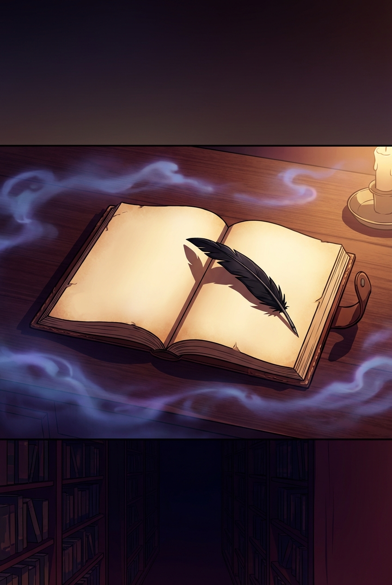
An Illustrated Summary
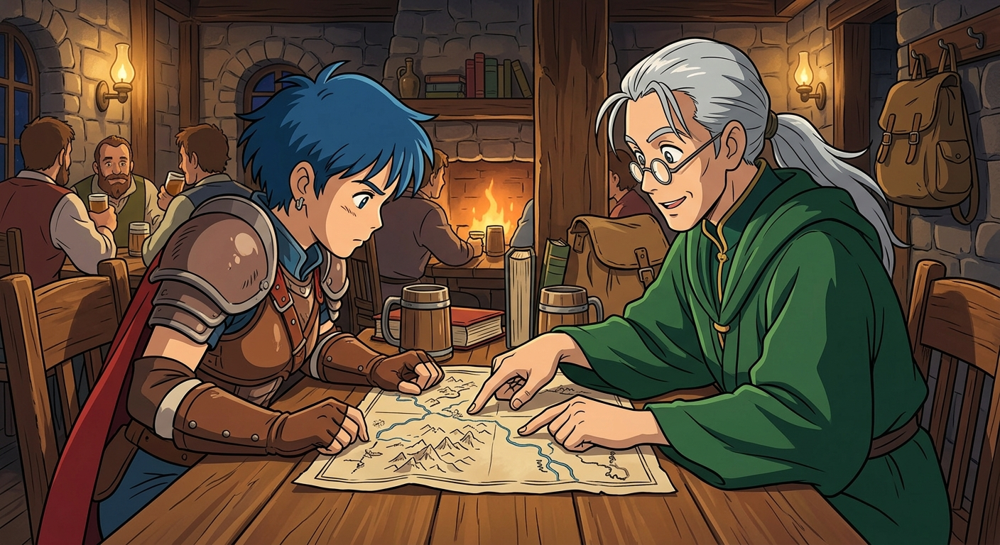
# Summary of Chapter I
The year is 1801, and Mr. Lockwood has just returned from paying his respects to his new landlord—a visit that proved as peculiar as it was unwelcoming. Having recently taken up residence at Thrushcross Grange, Lockwood finds himself delighted by the remote Yorkshire landscape, proclaiming it a perfect sanctuary for one who wishes to flee the tiresome bustle of society. His landlord, Mr. Heathcliff, strikes him as an ideal companion in solitude—a man whose suspicious black eyes and guarded manner speak of a reserve even deeper than Lockwood's own.
Upon arriving at Wuthering Heights, Lockwood receives a greeting that can scarcely be called hospitable. Heathcliff's invitation to enter is uttered through clenched teeth, his entire bearing suggesting he would sooner send his visitor to perdition than across his threshold. Yet this very coldness piques Lockwood's curiosity, and he accepts the grudging welcome with growing interest.
The dwelling itself commands attention. Its name derives from the fierce winds that batter the moorland station, evidenced by the tortured posture of stunted firs and gaunt thorns bent perpetually toward the sun. The house stands defiant against the elements—narrow windows set deep in thick walls, corners fortified with jutting stones. Above the door, amid crumbling carvings of griffins and cherubs, Lockwood discerns the date 1500 and the name Hareton Earnshaw, though Heathcliff's impatient stance forbids any inquiry into this history.
Within, the family sitting-room presents a scene of rustic antiquity: stone floors, primitive green-painted chairs, pewter dishes towering upon a vast oak dresser, and old guns mounted above the chimney. Dogs lurk everywhere—a liver-coloured pointer bitch with her squirming puppies, shaggy sheep-dogs watching with jealous vigilance. The furnishings suit a plain northern farmer well enough, yet Heathcliff himself forms a striking contrast: dark-skinned and gypsy-like in appearance, yet carrying himself with the negligent grace of a gentleman, handsome despite—or perhaps because of—his morose and slovenly bearing.
Lockwood confesses his tendency to project his own qualities upon others, for he too shrinks from displays of affection. He recalls with shame a recent incident at the seaside, where a fascinating young woman returned his unspoken admiration, only to be met with his icy withdrawal until she fled in confusion. This curious disposition has earned him an undeserved reputation for heartlessness.
Left alone with Heathcliff's menacing dogs, Lockwood foolishly provokes them with grimaces until the entire pack descends upon him in a fury. He defends himself with a poker until a stout kitchen woman rushes in wielding a frying-pan, dispersing the animals with magnificent efficiency. Heathcliff returns with maddening slowness, showing little concern for his guest's predicament. After sharp words are exchanged—Lockwood comparing the dogs to demon-possessed swine—his host's countenance finally relaxes into something approaching amusement. Wine is poured, civilities are observed, and the two men converse intelligently enough on matters concerning the neighbourhood.
By evening's end, though Heathcliff clearly desires no repetition of this intrusion, Lockwood resolves to return the very next day, astonished to find himself feeling almost sociable by comparison to his brooding, enigmatic landlord.
With curiosity now thoroughly kindled by this strange household and its stranger master, Lockwood prepares to venture once more unto the windswept heights.
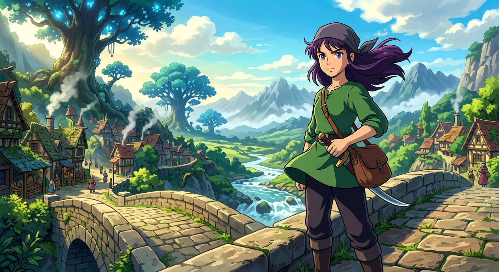
# Chapter Summary
The raw misery of a February afternoon nearly kept Lockwood fireside at Thrushcross Grange, but circumstances conspired against his comfort. A servant girl had invaded his study with her coal-scuttles and brushes, raising such clouds of dust and cinder that he found himself driven out into the cold. Thus began his four-mile trudge through gathering snow to Wuthering Heights, where he arrived just as the first white flakes began their descent upon that desolate hilltop.
His reception proved even colder than the weather. The chain on the gate would not yield, and his knocking went so long unanswered that his knuckles ached and the dogs set up their infernal howling. Old Joseph, that vinegar-faced servant, offered nothing but surly directions and dialect-laden refusals, and it was only by chance that a coatless young man bearing a pitchfork led Lockwood through the wash-house into the warmth of that great kitchen.
There he encountered the mistress—though not the mistress he had imagined. This young woman, scarcely past girlhood, possessed a face of remarkable beauty: golden ringlets, delicate features, small and fair. Yet her eyes held nothing of welcome; they hovered instead between scorn and a strange desperation. When Lockwood attempted pleasantries, she met him with silence or cutting remarks. He mistook a heap of dead rabbits for cats. He offered help she did not want. He inquired whether he had been asked to tea and received only cold confirmation that he had not.
The young man—rough, bearish, with unwashed hands and a manner hovering between servant and equal—proved equally hostile, glowering at Lockwood as though nursing some private grievance. Only Heathcliff's arrival offered any relief, and even that proved temporary. Over a grim and silent meal, Lockwood blundered spectacularly, assuming the beautiful young woman was Heathcliff's wife. She was not. She was his daughter-in-law, widowed—her husband dead, her beauty wasted in this desolate place. And the rough young man was not Heathcliff's son at all, but one Hareton Earnshaw, who announced his name with a fierce pride that invited no contradiction.
The snow meanwhile had thickened into a blinding storm. When Lockwood begged for guidance home, he found only refusal and mockery. Heathcliff would spare no guide; the young widow could offer only bitter advice to take the road he came; Hareton's tentative offer was crushed by his master's command. In desperation, Lockwood seized a lantern and made for the door—only to be set upon by the household dogs, knocked flat, his light extinguished, while Heathcliff and Hareton laughed at his humiliation.
It was the housekeeper Zillah who finally intervened, splashing cold water on his bleeding nose and leading him, sick and trembling, back inside. There was nothing for it but to accept shelter beneath that inhospitable roof, where the very air seemed poisoned with old hatreds and unspoken griefs—mysteries that Lockwood could not yet fathom but which pressed upon him with the weight of the snowbound night itself.
# Chapter III Summary
Guided upstairs by the servant, who urged silence and concealment of his candle—for the master harbored peculiar notions about this chamber and suffered no one to lodge there willingly—Lockwood found himself deposited in a room of sparse furnishing: a chair, a clothes-press, and a curious oak structure resembling a cabinet with coach-window squares cut near its top. Upon examination, this proved to be an antiquated enclosed bed, a little closet unto itself, with the ledge of a window serving as table. He slid inside, pulled the panels shut, and felt himself secure against Heathcliff and all the world.
The window-ledge bore a few mildewed books and was covered with scratched writing—nothing but a name repeated in every manner of script: *Catherine Earnshaw*, varied here and there to *Catherine Heathcliff*, then again to *Catherine Linton*. The names swam before his drowsy eyes until white letters seemed to swarm like spectres in the darkness. His candle had tilted against one of the volumes, perfuming the air with roasted calf-skin. He snuffed the flame and examined the damaged book—a Testament inscribed with Catherine Earnshaw's name and a date some quarter-century past. Her entire library proved similarly dilapidated, filled with pen-and-ink commentaries and diary entries scrawled in a childish hand, alongside a crude yet powerful caricature of Joseph.
These faded hieroglyphics drew him in. Catherine's diary recounted an awful Sunday: her father dead, her brother Hindley a detestable tyrant whose cruelty toward Heathcliff proved unconscionable. She and Heathcliff had been commanded to Joseph's three-hour garret sermon while Hindley and his wife Frances basked by the fire. When Catherine and Heathcliff rebelled—hurling their religious texts into the dog-kennel—they were cast into the back-kitchen, where Catherine scratched her defiance into the margins of books while plotting escape to the moors. Another entry spoke of Hindley's determination to reduce Heathcliff to his rightful place, forbidding the children to play together or even share meals.
Lockwood dozed over the pages until dreams overtook him—first a nightmare of Joseph and the Reverend Jabez Branderham delivering a sermon of four hundred and ninety parts, each cataloguing separate sins, until the congregation turned upon him with their pilgrim's staves. He woke to find only a fir-branch rattling against his lattice.
But the second dream proved more terrible still. Reaching through broken glass to silence the branch, his fingers closed upon a little ice-cold hand. A melancholy voice sobbed, "Let me in—let me in!" It called itself Catherine Linton, lost upon the moor for twenty years. Terror made him cruel—he rubbed the ghostly wrist against the broken pane until blood soaked the bedclothes, yet still it clung and wailed.
His screams brought Heathcliff rushing in, white-faced and trembling. When Lockwood carelessly mentioned Catherine's name and the haunting, Heathcliff's composure shattered entirely. After dismissing his guest, Heathcliff wrenched open the lattice and burst into an uncontrollable passion of tears, sobbing into the snow and wind: "Come in! Come in! Cathy, do come. Oh, my heart's darling!"
Shaken and bewildered by this display of anguish whose cause lay beyond his comprehension, Lockwood descended to the back-kitchen to wait for dawn. The morning brought only further inhospitality—Joseph's silent contempt, Hareton's inarticulate surliness, and Heathcliff berating his daughter-in-law for idleness. At first light, Lockwood escaped into the frozen air, Heathcliff accompanying him partway across the treacherous moor before leaving him at Thrushcross Park's entrance. By noon, benumbed and exhausted, Lockwood reached home—yet his thoughts remained tangled in the mysteries of Wuthering Heights, and the spectral voice still echoed in his memory, crying out across twenty years of wandering.
# Chapter Summary
What fickle creatures we prove ourselves to be when solitude presses too heavily upon us. Here was Lockwood, who had arrived at Thrushcross Grange determined to enjoy his isolation, now finding himself desperate for company as dusk settled over the moors. His resolve crumbled entirely, and he summoned Mrs. Dean—the housekeeper—under the pretence of discussing household matters, though in truth he hoped she might enliven his dreary evening with conversation.
At first she seemed no gossip at all, offering only brief responses to his inquiries about her years of service. But when Lockwood steered the talk toward Heathcliff and the inhabitants of Wuthering Heights, the floodgates opened. Mrs. Dean revealed that the young widow, Mrs. Heathcliff, was in fact Catherine Linton—daughter of her former master and not, as Lockwood briefly wondered, the ghostly Catherine of his strange encounter. The tangled family connections emerged piece by piece: young Cathy had married her own cousin, Heathcliff's son, now dead. Hareton Earnshaw, that rough young man at the Heights, was the nephew of the elder Mrs. Linton and cousin to young Cathy as well. The ancient Earnshaw name carved above the door belonged to a family now reduced to this single heir, dispossessed in his own home.
Lockwood, feverish and chilled from his ordeal on the moors, begged Mrs. Dean to tell him more. She obliged willingly, settling in with her sewing and a basin of gruel for her ailing tenant.
Her tale began decades earlier, when she was a young servant at Wuthering Heights. She recalled the summer morning when old Mr. Earnshaw departed for Liverpool on foot, promising gifts to his children—a fiddle for young Hindley, a whip for little Cathy. Three days later he returned, exhausted and bearing not presents but a ragged, dark child he had found starving in the city streets. Mrs. Earnshaw protested bitterly at this gipsy foundling brought among them, but her husband would not be moved. The promised gifts had been lost or crushed during the journey, and the Earnshaw children—robbed of their treasures—turned their spite upon the newcomer from that first night.
They christened him Heathcliff, after a son who had died in infancy, and that single name served him ever after. Young Cathy warmed to him quickly, but Hindley's hatred festered from the start, and even Mrs. Dean confessed to treating the boy shamefully. Yet Heathcliff endured their cruelty with unsettling patience—never weeping, never complaining—and this stoic silence only deepened Mr. Earnshaw's attachment to him. The old master began favouring the foundling above his own son, breeding resentment that poisoned the household long before Mrs. Earnshaw's death two years later.
It was during a bout of measles that Mrs. Dean's feelings shifted. Heathcliff, dangerously ill, proved the quietest and least troublesome patient she had ever tended, and her sympathies softened toward him even as Hindley lost his final ally. Yet she could never quite trust the boy. She recounted how Heathcliff had manipulated Hindley into surrendering the finer of two colts, threatening to expose the beatings he suffered—and when Hindley attacked him brutally, Heathcliff simply gathered himself up, took what he wanted, and let Mrs. Dean invent excuses for his injuries.
She had believed him incapable of vengeance, she admitted—but in that belief, she had been utterly deceived, as the coming tale would prove.
# Chapter V Summary
As the seasons turned at Wuthering Heights, Mr. Earnshaw's vigorous constitution began its slow and irreversible decline. The man who had once roamed the moors with tireless energy now found himself confined to the chimney-corner, his world shrinking to the width of the hearth. With his strength departed his patience, and he grew grievously irritable, seeing slights and offenses in the smallest provocations. Most particularly did he guard his foundling Heathcliff, growing painfully jealous over the boy, convinced that the household conspired against the child he loved. This fierce protectiveness proved a double-edged blessing, for the servants and family learned to humour the master's partiality rather than fret him, and such indulgence only fed Heathcliff's pride and darkening temper. Hindley's open scorn for the favourite, displayed within earshot of their ailing father, drove the old man to fits of impotent rage—he would seize his stick to strike his own son, shaking with fury he could not act upon.
At the curate's counsel, Hindley was dispatched to college, and the household breathed easier for his absence. Yet peace remained elusive, disturbed by two persistent forces: Catherine's wild spirit and Joseph's relentless piety. The old servant had mastered the art of worming his way into Mr. Earnshaw's fading confidence, ransacking scripture to flatter the master's weaknesses whilst heaping blame upon the children—particularly Catherine, whom he painted as the chief source of household sin.
And what a creature Catherine was in those days! Her spirits ran perpetually at high-water mark, her tongue never still, singing and laughing and plaguing everyone who would not match her mood. A wild, wicked slip of a girl, yet blessed with the bonniest eyes and sweetest smile in the parish. She meant no lasting harm, and when her mischief drew genuine tears, she would keep company in the sorrow she had caused. Her attachment to Heathcliff had grown absolute—separation from him became the severest punishment that could be devised. In play, she commanded him utterly, and he obeyed her bidding in everything, whilst following his adoptive father's wishes only when inclination suited.
Mr. Earnshaw, who had never understood levity from his children, found Catherine's defiance increasingly unbearable. His peevish reproofs only wakened in her a naughty delight; she seemed happiest when the entire household scolded her at once, and she could defy them all with her bold, saucy look. His rebuffs—"I cannot love thee, thou'rt worse than thy brother"—drew tears at first, but repeated rejection gradually hardened her heart until she learned to laugh at suggestions of repentance.
The hour came at last that ended Mr. Earnshaw's earthly troubles. One October evening, as a high wind roared wild around the house, he sat by the fire with the household gathered near. Catherine, subdued by recent illness, leaned gentle against her father's knee while Heathcliff lay with his head in her lap. The old man stroked her bonny hair, pleased to see her quiet for once, and asked why she could not always be a good lass. She answered with her characteristic wit, then kissed his hand and sang him softly to sleep. Only when Joseph rose to wake him for evening prayers did they discover the master had slipped beyond all waking. Catherine, embracing her father to bid him goodnight, discovered the terrible truth and screamed her grief into the storm—"Oh, he's dead, Heathcliff! he's dead!"
Their heart-breaking cries echoed through the Heights. Later that night, when the household had quieted, the two children sat wakeful past midnight, comforting each other with innocent visions of heaven more beautiful than any parson could paint. And listening to their tender talk, one could only wish that such peace might shelter them always—though the changes that Hindley's return would bring suggested otherwise.
# Chapter VI Summary
Mr. Hindley returned to Wuthering Heights for his father's funeral bearing a surprise that set every tongue in the neighbourhood wagging—a wife, of whom no one knew anything, neither her origins nor her fortune. The secrecy surrounding the match suggested she possessed neither money nor name worth boasting of, else Hindley would surely have informed his father whilst the old man lived.
The new Mrs. Earnshaw proved a peculiar creature, delighting in every rustic detail of the house—the whitewashed floors, the great fireplace, the pewter and delft—with such childlike enthusiasm that Hindley abandoned his plans to refine their quarters. Yet beneath her bright eyes and fresh complexion lurked something fragile. She could not bear the funeral preparations, fleeing to her chamber in a state of hysterical terror at the mere sight of mourning black, trembling and weeping with an inexplicable dread of dying. The shallow cough, the breathlessness upon climbing stairs, the quivering at sudden noises—these signs went unheeded, for what did any of us know then of what such symptoms portended?
Hindley himself had changed considerably during his three years' absence—grown sparer, paler, adopting new manners and dress. His first act as master was to banish Joseph and myself to the back-kitchen. His wife initially showed great affection toward Catherine, showering her with presents and sisterly attention, but this warmth cooled quickly. When peevishness replaced her enthusiasm, Hindley's tyranny followed, and a few careless words against Heathcliff were sufficient to resurrect all his old hatred. He stripped the boy of his education, drove him from the family's company to labour alongside the common farm hands, and reduced him to the status of a servant.
Heathcliff endured this degradation with surprising patience, for Cathy remained his constant companion, teaching him her lessons and sharing his work in the fields. Together they grew wild as savages, escaping to the moors whenever they pleased, caring nothing for the punishments that awaited their return. The curate's chapters and Joseph's thrashings became mere inconveniences, forgotten the moment they conspired together on some new scheme of revenge.
One Sunday evening, banished from the sitting-room for some trifling offence, the two children vanished entirely. We searched everywhere until Hindley, in a fury, ordered the doors bolted against them. I alone kept watch at my window through the rain, and at last Heathcliff appeared—without Catherine. She had been left at Thrushcross Grange, he explained, and proceeded to recount their adventure with fierce relish.
They had stolen across the moors to spy upon the Lintons, peering through the drawing-room window at the splendid crimson carpets and glittering chandelier, only to find the pampered Linton children—Edgar and Isabella—quarrelling over a small dog until both wept. Heathcliff's contempt was magnificent; he declared he would not exchange his condition for Edgar's for a thousand lives. But their laughter betrayed them. The Lintons' bulldog seized Catherine by the ankle, and though Heathcliff fought to free her, the servants dragged them inside. There the Lintons recognised Catherine as the Earnshaw girl and treated her with solicitude—washing her wounded foot, combing her hair, feeding her cakes by the fire—whilst Heathcliff was cast out as a gypsy and a villain.
My warning that more trouble would follow proved prophetic. Mr. Linton himself arrived the next day to lecture Hindley on his failures as guardian, and the consequences fell swiftly: Heathcliff was forbidden to speak a single word to Catherine upon pain of dismissal, and Mrs. Earnshaw was charged with restraining her wild sister-in-law through cunning rather than force—for force, with Catherine, would prove utterly impossible.
# Chapter VII Summary
Cathy returned to Wuthering Heights after five weeks at Thrushcross Grange, her ankle healed and her wild nature considerably tamed. The mistress there had worked upon her with fine clothes and flattery, and the transformation proved remarkable—where once a hatless savage had bounded through doors, now descended from a handsome black pony a dignified young lady in brown ringlets, a feathered beaver hat, and a long cloth habit she must hold with both hands to sail indoors properly. Hindley pronounced her quite a beauty, scarcely recognisable, and his wife Frances agreed that Isabella Linton could not compare, though she warned Cathy must not grow wild again.
Beneath the habit shone a grand plaid silk frock, white trousers, and burnished shoes. When the dogs bounded up to greet her, Cathy dared hardly touch them for fear of soiling her splendid garments. She kissed Nelly gently—the servant being covered in flour from the Christmas cake—then looked round for Heathcliff.
He was difficult to find. If he had been careless and uncared for before Catherine's absence, he had become ten times more so since. Nobody troubled to bid him wash but Nelly, and his clothes had seen three months' service in mire and dust, his hair thick and uncombed, his face and hands dismally beclouded. He skulked behind the settle, expecting his rough-headed counterpart, not this bright, graceful damsel.
When Cathy discovered him, she flew to embrace him with seven or eight kisses—then drew back laughing, exclaiming how black and cross and funny he looked. Shame and pride threw double gloom over his countenance. Hindley enjoyed his discomfiture, calling him forward like the other servants, and when Edgar Linton's name escaped Cathy's lips in comparison, Heathcliff found his tongue at last: he would not stand to be laughed at.
Their reunion dissolved in bitterness. Heathcliff declared he would be as dirty as he pleased, and dashed from the room amid the master's merriment. Cathy could not comprehend what had wounded him so deeply.
That Christmas Eve, while Nelly sat alone admiring the polished clock decked in holly and the silver mugs ready for mulled ale, she remembered old Earnshaw's fondness for Heathcliff and his dread that the boy should suffer neglect after his death. Her singing turned to crying, and she resolved to repair some of his wrongs rather than merely weep over them.
She found Heathcliff in the stable and offered to dress him smartly, but he would not come. His cake and cheese remained untouched all night. In the morning, however, fasting and reflection brought him round. He asked Nelly to make him decent—he meant to be good.
Nelly scrubbed and combed him, spinning fancies that his father might have been Emperor of China, his mother an Indian queen, that he was kidnapped by wicked sailors and brought to England. She urged him to frame high notions of his birth, to find courage and dignity against his oppressors. Heathcliff's frown gradually softened into something almost pleasant.
But ill luck would have it that as he opened the kitchen door, Hindley opened it from the other side and shoved him back, ordering Joseph to keep the fellow in the garret till dinner was over. Young Edgar Linton peered in and remarked upon Heathcliff's hair hanging like a colt's mane—meant as no insult, yet Heathcliff seized a tureen of hot apple sauce and dashed it full against the boy's face.
Hindley dragged Heathcliff away to administer rough punishment. Cathy stood confounded, blushing for all, unable to eat her dinner, though she hid her tears beneath the tablecloth. That evening there was dancing and music from the Gimmerton band, and while the house rang with carols, Cathy crept along the roof through one skylight to another to reach Heathcliff in his garret prison. Later, by the kitchen fire, Heathcliff sat in dumb meditation, planning how he should one day pay Hindley back—a vengeance he would wait any length of time to achieve.
Nelly paused in her tale, suggesting Mr. Lockwood must be weary, but he insisted she continue without leaping over years—and so she prepared to carry the story forward into the summer of 1778.
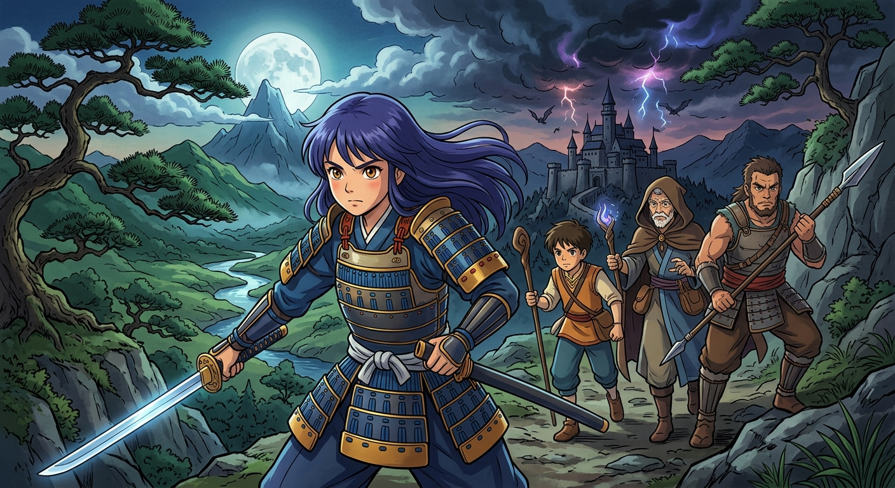
# Chapter VIII Summary
On a bright June morning, the last child of the ancient Earnshaw line came squalling into the world at Wuthering Heights—a beautiful boy named Hareton. Yet even as the household rejoiced over this bonny bairn, death cast its long shadow across the celebration. The physician Kenneth delivered his grim verdict: Frances Earnshaw, so long consumed by illness, would not see the winter through. The young mother, flushed with the delirium of new motherhood, refused to believe it, chattering gaily about watching her son grow to manhood. And Hindley, that desperate fool, clung to his denial with the ferocity of a man drowning. He cursed the doctor, insisted his wife improved daily, told her so himself—and she believed him, or pretended to. Poor soul! That gay heart never faltered until the very end. One night, as she leaned against her husband's shoulder, speaking of rising from bed tomorrow, a cough seized her—a slight thing, barely worth notice—and in the span of a breath, with her hands clasped about his neck, Frances Earnshaw died.
What followed was a household's descent into chaos. Hindley surrendered himself utterly to reckless dissipation, cursing God and man alike, treating servants with such tyranny that only Nelly Dean and the self-righteous Joseph remained. The infant Hareton fell wholly into Nelly's care, his father content so long as the child appeared healthy and never cried. Heathcliff, meanwhile, found grim satisfaction in watching Hindley's degradation, growing daily more sullen and savage, while Catherine blossomed into a proud, headstrong creature of fifteen—the unrivaled queen of the countryside.
It was during this period that young Edgar Linton began his visits to Wuthering Heights, drawn inexorably to Catherine despite his terror of Hindley's wild reputation. Catherine had learned well the art of double character during her convalescence at Thrushcross Grange—presenting genteel courtesy to the Lintons while reserving her rough, unrestrained nature for home. She found herself caught between two worlds, unable to fully reconcile her fierce attachment to Heathcliff with her growing fascination with Edgar's refinement.
The tension erupted one afternoon when Heathcliff, taking advantage of Hindley's absence, announced his intention to spend the day with Catherine—only to discover she had already summoned Edgar. He confronted her with an almanac marked painstakingly with crosses and dots, cataloguing every evening she had spent with the Lintons versus those with him. Catherine, caught and defensive, lashed out cruelly, calling him dumb and babyish. Before the quarrel could resolve, Edgar arrived, and Heathcliff withdrew in wounded silence.
What followed revealed Catherine's volatile nature in full. When Nelly refused to leave the young couple alone, Catherine pinched her viciously, then slapped her across the face. Little Hareton's frightened cries only earned him a violent shaking from his aunt, and when Edgar intervened, he received a blow to the ear that sent him reeling toward the door. Yet even as he attempted to flee, pale and trembling, Catherine's desperate plea detained him—and that soft-hearted young man found himself unable to depart. The quarrel, rather than driving them apart, broke through the pretense of mere friendship and allowed them to confess themselves lovers.
News of Hindley's return—drunk and dangerous as ever—sent Edgar galloping home and Catherine fleeing to her chamber, while Nelly busied herself hiding young Hareton and removing the shot from the master's fowling-piece, preparing as best she could for another night of madness at Wuthering Heights. The storm gathering over this infernal house had only just begun to show its true fury.
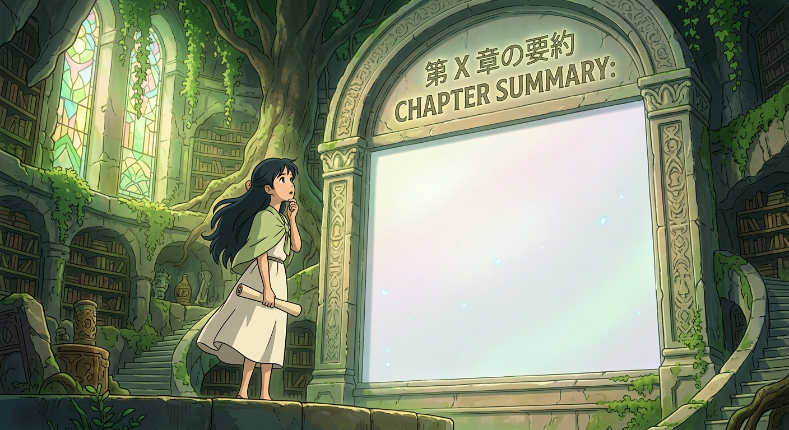
# Chapter IX Summary
The evening began in chaos when Hindley Earnshaw burst through the door in a drunken fury, discovering Nelly Dean hiding young Hareton in the kitchen cupboard—a desperate measure to protect the child from his father's volatile moods, which swung wildly between smothering affection and murderous rage. Hindley, raving and brandishing a carving knife, threatened Nelly with death, though she met his madness with wry defiance, remarking she'd rather be shot than swallow a blade that had been cutting red herrings. The danger escalated when Hindley carried the screaming Hareton upstairs and dangled him over the banister, only to drop the child when distracted by approaching footsteps. By cruel chance, Heathcliff arrived below at precisely that moment and instinctively caught the falling boy—a rescue that twisted his face into bitter anguish, for he had unwittingly saved the heir of his tormentor. Had darkness concealed the deed, Nelly knew, Heathcliff might well have dashed the child's brains out himself.
After Hindley retreated to his brandy, declaring his soul destined for perdition, Nelly settled by the fire to comfort Hareton while Heathcliff slipped unseen onto a bench in the shadows. There Catherine found them, her manner troubled and anxious. She confided to Nelly that Edgar Linton had proposed marriage that very day, and she had accepted—though her heart remained divided. When Nelly pressed her on the nature of her love for Edgar, Catherine's answers revealed only shallow attractions: his handsomeness, his wealth, the status his wife would enjoy. Yet when she spoke of Heathcliff, her voice transformed entirely. She declared their souls were forged of the same substance, that her love for Edgar resembled seasonal foliage while her bond with Heathcliff was like the eternal rocks beneath—necessary, permanent, inseparable from her very being. "I *am* Heathcliff," she proclaimed, believing she might use the Linton fortune to elevate him from degradation.
But Heathcliff had heard only the wounding half of her confession—that marrying him would degrade her—before stealing away into the gathering storm. Catherine's frantic search proved futile. She waited through the violent tempest that split a tree and sent stones crashing into the kitchen, standing drenched in the downpour until midnight passed and dawn arrived. By morning she had fallen dangerously ill with fever, and Heathcliff had vanished entirely from the moors.
Catherine's slow recovery brought her to Thrushcross Grange under Mrs. Linton's care—a kindness that cost the old woman and her husband their lives when they too succumbed to the fever. Three years later, Catherine married Edgar Linton, and Nelly was compelled to leave Wuthering Heights and young Hareton behind, following her mistress into a new life at the Grange where the consequences of that stormy night's confessions would continue to unfold.
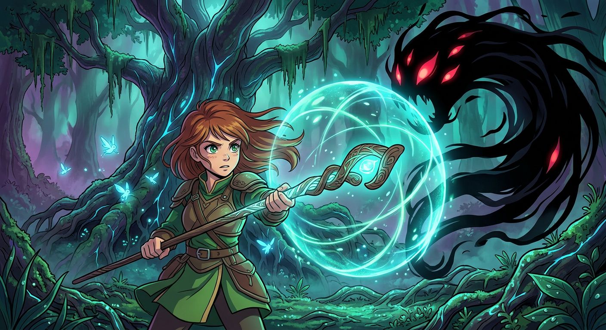
# Chapter X Summary
What a charming introduction to a hermit's existence—four weeks of misery, tossing about in illness, subject to bleak northern winds and bitter skies, impassable roads and dilatory country surgeons! And oh, the dearth of human company, made worse still by Kenneth's dire pronouncement that there would be no venturing outdoors until spring. When Mr. Heathcliff honours me with a visit, bringing grouse as a peace offering (though the scoundrel bears some guilt in my present condition), I find myself too weak for books yet hungry for diversion. I summon Mrs. Dean to continue her tale, pushing aside her fussing about medicines and powders, and settle back to hear what became of Heathcliff after his mysterious three-year absence.
She obliges, taking up the thread from Miss Catherine's marriage to Edgar Linton. At Thrushcross Grange, to Nelly's agreeable surprise, Catherine behaved infinitely better than expected—not the thorn bending to the honeysuckles, but the honeysuckles embracing the thorn. Edgar's deep-rooted fear of ruffling her humour kept the gunpowder harmless as sand, and for half a year they possessed something approaching genuine happiness.
But such peace could not endure. On a mellow September evening, as Nelly lingered in the courtyard beneath the rising moon, a deep foreign voice spoke her name from the shadows. There stood Heathcliff—transformed utterly from the degraded creature who had fled three years prior into a tall, athletic, dignified man with intelligent bearing, though a half-civilised ferocity still lurked in those deep-set eyes full of black fire. His return sent Catherine into wild, breathless ecstasy that bordered on calamity, while poor Edgar grew pale with annoyance at his wife's unbridled joy.
That first visit established a dangerous pattern. Heathcliff took lodging at Wuthering Heights with Hindley—the very brother who had persecuted him—exploiting Hindley's gambling debts and covetousness to install himself within walking distance of the Grange. Catherine, transported by happiness at her friend's return, remained blind to the threat he posed, though Nelly harboured dark presentiments.
Then came an unforeseen complication: Isabella Linton, Edgar's eighteen-year-old sister, developed an irresistible attraction toward the tolerated guest. When Catherine discovered this infatuation, she warned Isabella in the plainest terms—Heathcliff was an unreclaimed creature, a fierce wolfish man who would crush her like a sparrow's egg. But Isabella, deaf to all counsel, persisted in her delusion. Catherine, in mischievous cruelty, exposed her sister-in-law's secret passion directly to Heathcliff, who regarded the poor girl with the cold curiosity one might show a repulsive insect. Yet afterward, Nelly observed him lapsing into ominous musing, smiling grimly to himself—and when he inquired whether Isabella was her brother's heir, the shape of his scheming became terribly clear.
Nelly resolved to watch his movements closely, her heart cleaving to her master's side, for she felt that an evil beast now prowled between the fold and its straying sheep, waiting for the moment to spring and destroy.
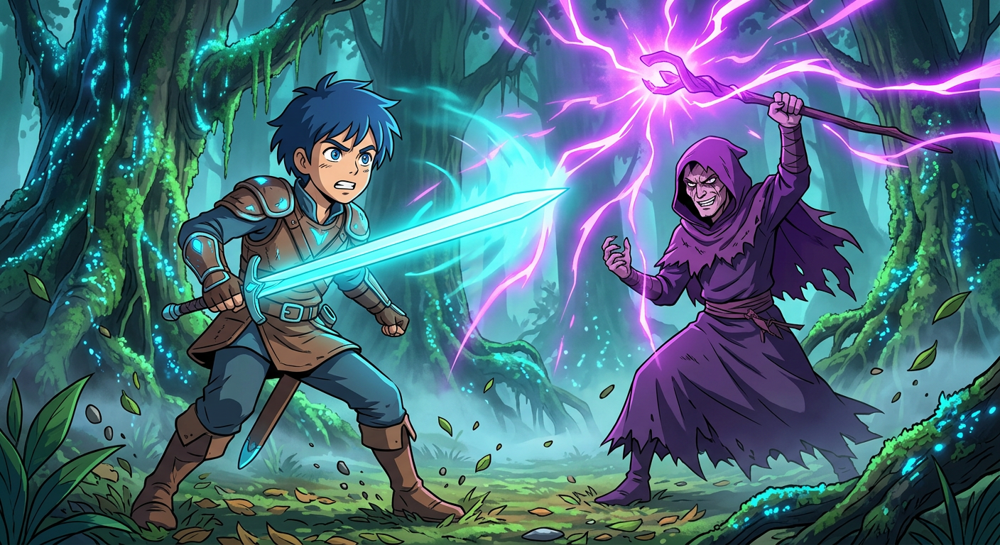
# Summary of Chapter XI
In the solitude of her own troubled thoughts, Nelly Dean has often risen in sudden terror, seized by the urge to visit Wuthering Heights and warn Hindley of the dark rumours swirling about his dissipated ways. Yet each time, recollecting his confirmed bad habits, she has shrunk from entering that dismal house, doubting whether any good could come of it.
One bright frosty afternoon, while journeying to Gimmerton, Nelly passes the old stone guide-post where the highway branches toward the moor—a rough sand-pillar carved with the letters marking the way to the Grange, the Heights, and the village. The winter sun shines yellow upon its grey head, stirring within her a sudden gush of childhood sensations. She remembers how she and Hindley had loved this spot twenty years before, storing snail-shells and pebbles in a little hole near the stone's base. So vivid is the memory that she fancies she sees young Hindley himself, bent over the withered turf, scooping earth with a piece of slate. The apparition vanishes in a twinkling, but it leaves Nelly gripped by superstitious dread—what if Hindley should be dead, or dying soon?
Hastening toward Wuthering Heights, trembling in every limb, she discovers at the gate not a ghost but Hareton—her own nursling, now a wild, elf-locked boy with brown eyes and a ruddy countenance. When Nelly calls to him tenderly, he retreats and hurls a stone at her bonnet, following it with a string of curses delivered with practised emphasis that distorts his baby features into shocking malignity. Through coaxing and bribery with an orange, Nelly learns the source of the child's corruption: Heathcliff has taught him to swear, encouraging him to defy his father and threatening violence against anyone—even the curate—who might educate the boy. When Nelly sends Hareton to fetch Hindley, it is Heathcliff who appears at the door instead, and she flees down the road as if she had raised a goblin.
This encounter hardens Nelly's resolve to guard Thrushcross Grange against Heathcliff's spreading influence. Her vigilance proves well-founded when, during his next visit, she witnesses him embrace Isabella in the courtyard—a calculated seduction that Catherine, overhearing Nelly's outraged exclamation, attempts to suppress. The confrontation that follows lays bare the poisonous dynamics binding these souls together. Heathcliff confesses he means to pursue Isabella as revenge for the infernal treatment Catherine has dealt him, declaring he will make the most of her sister-in-law's secret affection. Catherine, flushed and gloomy, accuses him of seeking quarrels and warns that deceiving Isabella will be his most efficient method of wounding her.
When Edgar learns of the scene, he descends to banish Heathcliff from the house forever. But Catherine, determined to prevent what she deems cowardice, locks the door and flings the key into the fire. Edgar, humiliated and trembling, is mocked by both wife and rival until, goaded beyond endurance, he strikes Heathcliff a blow to the throat. Heathcliff escapes through a smashed door as servants flood the court, and Catherine, left in hysterics, threatens to break her own heart if she cannot keep both men in her life.
That night, when Edgar quietly demands she choose between himself and Heathcliff, Catherine succumbs to a violent fit—grinding her teeth, dashing her head against the sofa, her lips flecked with blood. She locks herself in her chamber and refuses all food, while Edgar retreats to his library and Isabella evades his attempts to warn her away from her worthless suitor. The household fractures into silence and estrangement, each party nursing wounds that fester in isolation—a darkness settling over Thrushcross Grange that promises yet deeper sorrows to come.
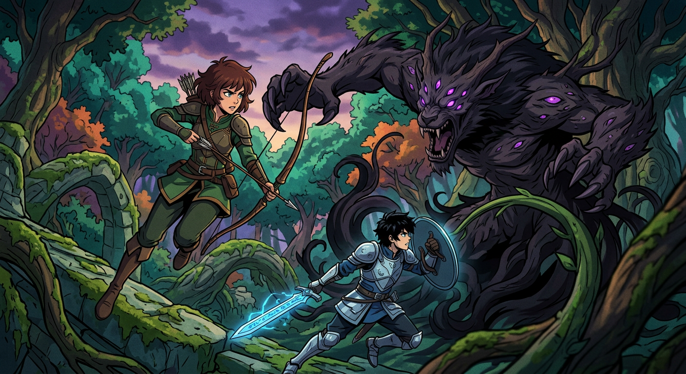
# Chapter Summary
In the great house of Thrushcross Grange, three souls languished in separate miseries while Nelly Dean, ever practical, went about her duties convinced she alone possessed any sense within those walls. Miss Linton wandered the grounds in perpetual silence and tears; Edgar Linton buried himself among books he never read, waiting vainly for his wife's repentance; and Catherine herself starved behind her locked door, fancying her husband desperate for her return when in truth he knew nothing of her true condition.
On the third day, Catherine unbarred her chamber and demanded sustenance, declaring she was dying—though Nelly suspected theatrical exaggeration and brought only tea and dry toast. The mistress swung wildly between proclaiming she wished to die and insisting she would not give Edgar such satisfaction. When Nelly revealed that the master sat calmly among his books, Catherine's distress transformed into something far more alarming. She caught sight of herself in the mirror and recoiled, unable to recognize the haggard creature staring back. Her mind began to fracture visibly—she tore at her pillow, sorting feathers by species while murmuring of lapwings and childhood memories with Heathcliff on the moors.
The delirium deepened as Catherine mistook Nelly for an aged witch gathering elf-bolts, and screamed in terror at her own reflection, believing it a ghost. Between lucid moments and madness, she confessed that upon locking herself away, her mind had transported her back seven years—before her marriage, before the Grange, to a time when she and Heathcliff were inseparable. She lamented being torn from the Heights, transformed into Mrs. Linton, wife of a stranger, exile from her true world. She longed desperately for the wild moors, for the girl she once was.
When Edgar finally entered and beheld his wife's ghastly transformation, he was struck speechless with horror. Catherine, half-delirious, rejected him utterly, declaring her soul belonged to the hill-top, not to him or his books, and swearing she would be buried in the open air rather than among the Lintons. Edgar blamed Nelly; Nelly defended herself sharply; Catherine accused her of treachery. The scene dissolved into chaos, and Nelly fled to fetch the doctor.
In the garden, she discovered Isabella's little dog half-strangled and hanging from a hook—a sinister portent. The doctor returned with her, speaking gravely of Catherine's chances and hinting at rumours of Isabella and Heathcliff meeting secretly. Nelly's fears crystallized when she found Isabella's room empty. By morning, the terrible news spread through the household: Isabella had eloped with Heathcliff in the night.
Edgar, crushed beneath his wife's illness, received this second blow with cold finality. His sister had gone willingly; she had disowned him. He would not pursue her. And so the Grange stood shattered—Catherine hovering between madness and death, Isabella vanished into the night with the man who would destroy her, and Edgar left alone with his silent grief and his useless books.
The consequences of that dark night would ripple outward, binding together love and hatred, the Heights and the Grange, in ways none of them yet imagined.
# Chapter XIII Summary
For two long months the fugitives—Heathcliff and Isabella—remained vanished from sight, and in that span of waiting and wondering, Mrs. Linton was struck down by what the physician Kenneth denominated a brain fever, a shock so violent it very nearly carried her off entirely. Edgar tended her with a devotion surpassing that of any mother nursing an only child, watching through every hour of day and night, enduring with saintly patience the torments her irritable nerves and shattered reason inflicted upon him. Kenneth warned that the wife he saved from the grave would only repay his care by becoming a source of constant future anxiety—that Edgar's own health and strength were being sacrificed to preserve what amounted to a mere ruin of humanity—yet when Catherine's life was at last declared out of danger, Edgar knew no bounds to his gratitude and joy. Hour after hour he sat beside her, tracing each small sign of returning bodily health, flattering himself with the fragile hope that her mind, too, would settle back to its proper balance and restore her entirely to her former self.
The first time Catherine left her chamber came at the beginning of March. Edgar had placed upon her pillow a handful of golden crocuses—the earliest flowers at the Heights—and her eyes, long strangers to any gleam of pleasure, caught them upon waking and shone with childlike delight. Yet even as she gathered them eagerly, her thoughts turned dark and prophetic. She spoke of never returning to those moors but once more—and then to remain forever. Edgar lavished upon her the tenderest caresses and fondest words, but she only gazed vaguely at the flowers while tears streamed unheeded down her cheeks. They moved her to the parlour, hoping a change of scene might lift her despondency, and there was double cause to desire her recovery: upon her existence depended another life, for they cherished the hope that an heir would soon gladden Edgar's heart and secure his lands from a stranger's grasp.
Meanwhile, Isabella sent word of her marriage to Heathcliff—a dry, cold note with a penciled apology beneath, entreating reconciliation. Edgar did not reply. A fortnight later, Ellen received a long letter from the new bride, and its contents revealed the full horror of Isabella's situation. She wrote from Wuthering Heights, describing her arrival at that desolate place after dark, received by the malignant Joseph with his sneering contempt, threatened by young Hareton—now a ruffianly child with Catherine's features but a savage tongue—and his half-bred bull-dog Throttler. She encountered Hindley Earnshaw, transformed into a gaunt, shaggy hermit consumed by madness and murderous hatred, who showed her a pistol with a spring-knife attached and confessed he tried Heathcliff's door nightly, hoping to find it unlocked so he might kill him.
Isabella's letter laid bare her complete desolation—the filthy kitchen, the absence of servants, Joseph's incomprehensible dialect and hostility, the ruined elegance of rooms gone to dust and decay. She found no ally against Heathcliff among these people; they were as brutal as he, or too absorbed in their own degradation to offer comfort. When at last Heathcliff appeared, he told her of Catherine's illness, accused Edgar of causing it, and promised that Isabella would serve as Edgar's proxy in suffering until he could reach the man himself. She confessed herself wretched, foolish, and filled with hatred for the man she had married—a tiger, a venomous serpent who labored with ingenious persistence to earn her abhorrence.
Thus the tangled fates of the two houses drew ever tighter, with Catherine hovering between life and death at the Grange while Isabella found herself imprisoned in a nightmare at the Heights, and the dark promise of Heathcliff's vengeance looming over them all.
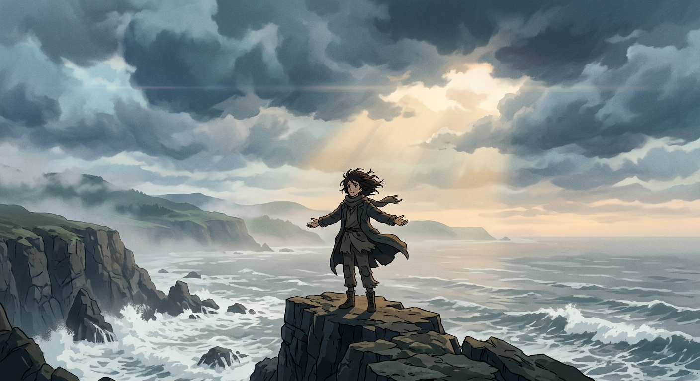
# Summary of Chapter XIV
Nelly Dean arrives at the Grange bearing Isabella's letter, her heart heavy with the weight of the young woman's desperate plea for reconciliation. She approaches Edgar Linton with news of his sister's return to Wuthering Heights, her longing to see him, and her fervent hope for forgiveness. Yet the master's response falls cold as January frost upon the moors. He claims there is nothing to forgive, yet refuses to write even a single line of comfort, declaring that all communication between his household and Heathcliff's shall cease entirely. Though Nelly implores him, Edgar remains immovable, and she departs with a heavier burden than before—tasked now with softening words that carry no warmth.
The journey to Wuthering Heights reveals a transformation most pitiful. The once-cheerful house has descended into dreary neglect, and Isabella herself appears diminished—wan, listless, her hair unkempt, her spirit broken. How strange that Heathcliff, of all creatures present, should seem the only decent figure, carrying himself with the bearing of a gentleman while his wife wastes into a shadow of her former self. When Isabella eagerly seeks the letter she expects, Nelly must deliver instead Edgar's cold dismissal: no letter, no visit, only the severing of ties.
Heathcliff seizes upon the moment to interrogate Nelly about Catherine's illness, and here his true purpose emerges with terrifying clarity. He demands—nay, he insists—upon an interview with Catherine, threatening to haunt Thrushcross Grange night after night until he succeeds. His passion pours forth in torrents: he could never love as Edgar loves, for Edgar's affection is but a shallow stream compared to the vast ocean of his own devotion. Catherine's heart, he declares, could no more be contained by her husband than the sea could be held in a horse-trough.
Isabella, stirred to sudden defence of her brother, protests against such depreciation—yet Heathcliff's scorn silences her swiftly. What follows is a revelation of Heathcliff's true nature, laid bare without pretence. He confesses to having married Isabella under no delusion of love, speaking openly of her degradation, her foolish romantic fantasies, and his deliberate cruelty—including the hanging of her little dog upon their first arrival. Isabella herself, eyes blazing with hatred, names him monster and fiend, revealing that he married her solely to gain power over Edgar. She wishes only for death—her own or his.
Heathcliff dismisses her roughly, and alone with Nelly, he presses his demand with threats both subtle and direct. If she will not aid him willingly, he will keep her prisoner until morning and force his way to Catherine regardless. At last, worn down by his relentless will, Nelly capitulates. She agrees to carry a letter to Catherine and, should her mistress consent, to arrange a secret meeting during Edgar's absence. Whether this choice be right or wrong, she cannot say—she hopes only to prevent a more violent confrontation, though misgivings darken every step of her homeward journey.
As Nelly pauses her tale to greet the arriving doctor, Lockwood reflects upon the strange and bitter history unfolding before him, resolving to guard himself against any fascination the younger Catherine might hold—lest he find himself ensnared by a second edition of the mother.
The letter now rests in Nelly's possession, a spark waiting to ignite what flames may follow when Catherine learns that Heathcliff still haunts her world, demanding entrance once more into her fractured existence.
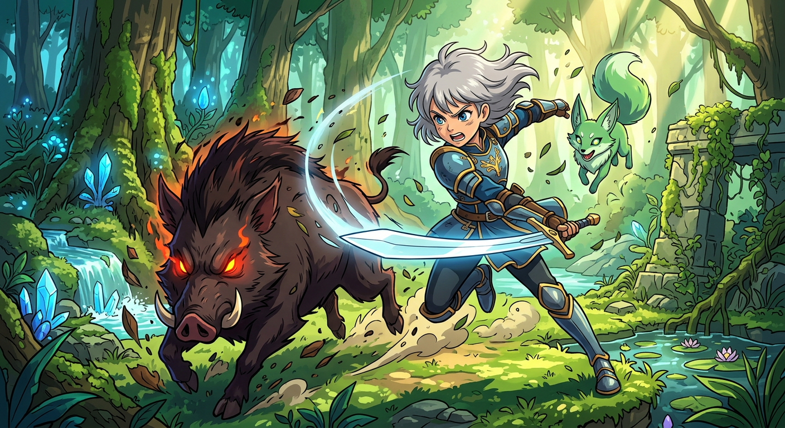
# Chapter XV Summary
Another week has passed at Thrushcross Grange, and Lockwood continues to recover his health while piecing together the remainder of Nelly Dean's tale. She resumes her account from that fateful Sunday when she finally delivered Heathcliff's letter to Catherine—three days after she had received it, having waited until Edgar departed for church to avoid whatever storm its contents might unleash.
The morning had dawned uncommonly warm, and Nelly took the liberty of setting the doors wide open, then sent the manservant off to the village on a fabricated errand for oranges. She knew well enough who would come calling. Upstairs, she found Catherine seated in the window recess, her figure draped in white, her long hair—thinned by illness—combed simply over her temples. There was something unearthly about her now: the old flash in her eyes had given way to a dreamy, melancholy softness, as though she gazed perpetually beyond the visible world. Her pallor and strange expression, though heartbreaking in their implications, lent her a haunting beauty that seemed to refute any hope of recovery. She was marked, unmistakably, as one doomed to decay.
Catherine showed little interest in the letter at first, her attention so far removed from earthly matters that Nelly was obliged to read it aloud. But at the mention of Heathcliff's name, recognition flickered across her face. Before any reply could be formed, the man himself had crossed the threshold—too impatient to wait, too bold to be denied—and in two strides he had Catherine in his arms.
What followed was a scene of terrible, savage tenderness. For five minutes he held her without speaking, and when at last words came, they were drenched in despair. Catherine, however, met his anguish not with comfort but with bitter accusations. She blamed both him and Edgar for breaking her heart, declared they had killed her, and wondered aloud whether Heathcliff would forget her in twenty years' time, speaking of her grave as one speaks of old, faded sorrows. Her cruelty roused him to equal fury; he seized her arm so roughly that he left blue marks upon her colourless skin, and demanded she cease tormenting him with words that would brand themselves forever into his memory.
Yet between these lashings of anger came moments of wrenching tenderness. Catherine softened, begging forgiveness, insisting she wished only that they never be parted. Heathcliff, though his face was livid with emotion, could not bring himself to relent visibly—and Catherine, watching him turn away, spoke of escaping her "shattered prison" of a body, of yearning to reach that glorious world beyond. She declared she would take *her* Heathcliff with her, for he was in her very soul.
At last, overcome by desperate longing, she sprang toward him, and he caught her in an embrace so fierce that Nelly feared her mistress would not survive it. They clung together, weeping, as the afternoon waned and the church congregation began returning home. Edgar's footsteps sounded on the stairs. Catherine, in wild desperation, refused to release Heathcliff, crying that this was their last meeting, that she would die if he left. He stayed—resigned even to be shot—until Catherine fainted in his arms.
When Edgar burst in upon this scene, Heathcliff thrust the lifeless-looking Catherine toward him and demanded he tend to her before speaking another word. In the confusion that followed, Nelly persuaded Heathcliff to withdraw, though he consented only to wait in the garden beneath the larch trees, vowing to return the next day for word of Catherine's condition.
As darkness gathered over the Grange, it seemed certain that whatever fragile peace had remained was now irrevocably shattered—and that the hours ahead would bring either death or some reckoning none of them could escape.
# Chapter XVI Summary
Around midnight, Catherine Linton breathed her last, never regaining enough consciousness to recognize either her husband Edgar or to call for Heathcliff. Two hours before her death, she delivered a frail, premature daughter—the young Catherine destined to grow up at Wuthering Heights. The infant entered the world unwelcomed and unattended, a poor orphan whom no one troubled over during those first desperate hours, so consumed were they by the dying mother and the devastated father. Edgar's grief ran too deep for words, his sorrow sinking into him like poison that would show its effects for years to come.
By morning, soft light crept through the blinds of the silent chamber, illuminating both the living and the dead with equal tenderness. Edgar lay with his head upon the pillow, his exhausted features nearly as still as Catherine's own, though his was the stillness of spent anguish while hers spoke of perfect, eternal peace. Her brow was smooth, her expression serene—more beautiful than any angel, it seemed. In that holy quietude, the watcher could not help but feel the profound calm of divine rest, echoing Catherine's own words: "Incomparably beyond and above us all."
Yet even as the household mourned, thoughts turned inevitably to Heathcliff. At sunrise, the faithful servant ventured outside, dreading yet compelled to deliver the terrible news. She found him beneath an old ash tree, drenched with dew, so motionless that birds had built their nest mere feet from where he stood. Before a single word could be spoken, he knew. "She's dead!" he declared, his voice savage with grief. When pressed about Catherine's final moments, he could scarcely form her name, his mouth compressing against waves of inward agony even as his eyes blazed with ferocious defiance.
Learning that Catherine had died peacefully, her senses never returning, Heathcliff erupted into terrible, ungovernable passion. He cursed her for a liar, demanding that her spirit haunt him rather than leave him alone in this unbearable abyss. "I cannot live without my life! I cannot live without my soul!" he howled, dashing his head against the tree trunk until blood stained the bark. The scene was beyond pity—it was appalling, savage, utterly beyond consolation.
Until the Friday funeral, Catherine's coffin remained uncovered in the great drawing-room, surrounded by flowers and scented leaves. Edgar kept sleepless vigil by day while Heathcliff haunted the grounds by night. Moved by his desperate persistence, the servant opened a window one evening, allowing him to steal in and bid his final farewell. He left no trace save the disarranged drapery about Catherine's face and a telling exchange—he had removed a curl of light hair from her locket, replacing it with a black lock of his own. The servant quietly twisted both together, enclosing them as one.
Catherine was buried neither in the Linton chapel nor among her own family's tombs, but on a green slope at the edge of the kirkyard, where the low wall allows heather and bilberry to creep over from the moor, and where the peat earth nearly swallows the graves from sight—a fitting resting place for a spirit that belonged wholly to neither world.
With Catherine now laid to rest between the civilized Grange and the wild moors she loved, those left behind must somehow forge onward, though Heathcliff's terrible curse suggests that death may prove no barrier to the bond between them.
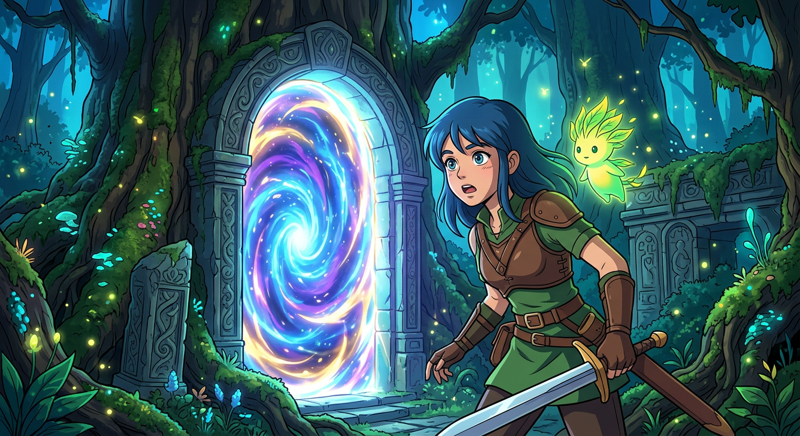
# Chapter Summary
That Friday marked the death of summer. By evening, the wind had wheeled from south to north-east, dragging rain behind it, then sleet, then snow—until the morrow crept in dreary and chill, burying primroses and crocuses beneath wintry drifts and striking the young leaves black upon the trees. The master kept to his room while Nelly claimed the lonely parlour for a nursery, rocking Catherine's moaning infant and watching the snow build against the uncurtained window.
The door burst open to reveal Isabella Heathcliff—breathless, laughing, half-wild with exhaustion. She had run the whole way from Wuthering Heights, her light silk frock clinging wet to her frame, her feet protected only by thin slippers, her hair streaming with snow and water. A deep cut beneath her ear had bled freely before the cold stanched it, and her white face bore scratches and bruises. She demanded a carriage to Gimmerton and clothes packed from her wardrobe, speaking with fevered haste about escape, about Heathcliff's fury, about the gold ring she tore from her finger and smashed upon the coals.
Once warmed and bandaged, Isabella unfolded her tale. Since Catherine's death, Heathcliff had become a stranger in his own house, disappearing to haunt the Grange and returning only to lock himself away, praying to senseless dust and ashes. Hindley, meanwhile, had descended further into drink and despair. The previous night, the two men's hatred had erupted into violence. Hindley had locked Heathcliff out in the storm, meaning to shoot him, but Isabella—though she wished Heathcliff dead—had warned him through the lattice. Heathcliff smashed through a window, wrenched the pistol from Hindley's grasp, and beat him savagely, trampling and kicking until the man lay senseless. Come morning, Isabella had taunted Heathcliff in his grief, goading him until he flung a dinner-knife at her head. She fled through the kitchen, past young Hareton hanging puppies in the doorway, and ran across the moors toward the Grange like a soul escaped from purgatory.
She departed that same day, never to return. Months later, she bore a son—christened Linton—whom she reported to be ailing and peevish from the first.
Edgar Linton withdrew into complete seclusion, abandoning his magistracy and avoiding any place where he might encounter Heathcliff. Yet time brought him resignation, and his infant daughter Catherine—always called Cathy—became the despot of his heart, her name both a distinction from her mother and a connection to her.
Hindley's end followed swiftly. He died drunk, barely twenty-seven, leaving the estate mortgaged to Heathcliff. The guest had become master of Wuthering Heights, and young Hareton—who should have been the first gentleman in the neighbourhood—was reduced to servitude in his own house, ignorant of how thoroughly he had been wronged.
Thus did Heathcliff's grip tighten over both houses, while within the Grange, little Cathy grew under her father's tender watch—unknowing of the darkness that would one day reach for her.
# Chapter XVIII Summary
The twelve years following Catherine Linton's death proved the happiest Nelly Dean had known, her only troubles being the ordinary ailments of childhood that visited young Cathy as they visit all children, whether born to privilege or poverty. The girl flourished like a larch tree, walking and speaking in her own fashion before the heath had blossomed twice over her mother's grave. She became the very embodiment of sunshine in that desolate house—a true beauty possessing the Earnshaws' striking dark eyes alongside the Lintons' fair complexion and delicate features, crowned with curling yellow hair. Her spirit ran high without roughness, tempered by a heart almost excessive in its capacity for tender attachment. In this she recalled her mother, yet differed entirely: where the elder Catherine had burned fierce and wild, young Cathy possessed a dove's gentleness, a pensive expression, and anger that never turned furious. Still, she harboured her faults—a propensity for sauciness and the perverse willfulness that spoiled children inevitably acquire.
Edgar Linton devoted himself entirely to her education, making an amusement of instruction that her quick intellect eagerly absorbed. Until her thirteenth year, Cathy remained a perfect recluse who had never ventured beyond the park's boundaries unaccompanied. Wuthering Heights and Heathcliff existed not at all in her sheltered world. Yet from her nursery window, she gazed upon Penistone Crags with mounting curiosity, questioning Nelly about those golden rocks that caught the setting sun long after shadow had claimed the valley below. The mention of a Fairy Cave turned her head completely, and she pestered her father ceaselessly about visiting, never knowing the road wound past the very place he could not bear to pass.
When Isabella died of a slow fever and summoned Edgar to retrieve her son Linton, the opportunity for mischief presented itself. Left under Nelly's care with strict orders to remain within the grounds, Cathy grew restless, then began her solitary rambles. One July morning, dressed as an Arabian merchant with her pony and dogs as caravan, she leapt the hedge and vanished toward her forbidden destination. By tea-time, Nelly's alarm drove her walking mile after mile until she discovered her wayward charge seated perfectly at home on the hearth of Wuthering Heights itself, chattering gaily to eighteen-year-old Hareton Earnshaw.
The encounter proved fateful in its revelations. Cathy, accustomed to being addressed as love and darling and angel, commanded Hareton as though he were a stable boy, only to receive his rough curses in reply. When the housekeeper revealed he was her cousin, the girl dissolved into horrified tears at such a connection to this coarse young man. Yet Nelly observed in Hareton's features evidence of better qualities buried beneath years of deliberate neglect—good things lost amid a wilderness of weeds, a wealthy soil that might yet yield crops under different circumstances. Heathcliff had bent his malevolence not upon physical cruelty but upon making the boy a brute, denying him all education and guidance while Joseph's narrow partiality only hastened his deterioration.
Cathy rejected Hareton's peace-offering of a terrier pup, and they departed for home, every soul among them out of sorts. Nelly extracted a promise of secrecy, knowing Edgar's distress should he learn of this forbidden excursion—and knowing too that word of young Linton's imminent arrival had surely reached Heathcliff's ears through the servants' revelations. After all her willfulness, Cathy kept her pledge for Nelly's sake, proving herself still, beneath the sauciness, a sweet little girl whose world had now cracked open to reveal troubling mysteries beyond the sheltered boundaries of Thrushcross Park.
# Chapter Summary
A black-bordered letter brought the news Ellen had been dreading and expecting in equal measure—Isabella was dead, and the master was returning home with his young nephew in tow. She set about preparing mourning clothes for Catherine and readying a room for the boy, all while the girl herself ran wild through the house with unbridled anticipation. Poor thing, her aunt's death had left no definite impression of sorrow upon her; she knew only that her father was coming home and bringing with him a "real" cousin, one whose flaxen lock of hair she had treasured in a little glass box, dreaming of the day she might meet its owner.
The evening of their arrival found Catherine dragging Ellen through the grounds to meet the carriage, chattering all the while about Linton being just six months her junior, about what a delightful playfellow he would make. She ran ahead and back again, unable to contain herself, until at last the travelling carriage rolled into view and she shrieked with joy at the sight of her father's face in the window.
While father and daughter exchanged their tender reunion, Ellen peered into the carriage to glimpse the boy. What she found gave her pause—a pale, delicate, effeminate child wrapped in furs as though it were the dead of winter, bearing a striking resemblance to Edgar Linton himself, yet marred by a sickly peevishness the master had never possessed. He slept on, too fatigued from the journey to be disturbed.
When at last they roused him and set him on his feet, the boy shrank from Catherine's eager greeting, tears already threatening at his eyes. He wanted only to go to bed. The master, clearly tried by his fretful charge during their travels, urged patience from his daughter—the child had lost his mother, after all, and was neither strong nor merry. But Catherine would not be deterred from making a pet of him, stroking his curls and offering him tea from her saucer as though he were a baby, which seemed to please him well enough.
Edgar watched them together with cautious hope, believing the company of a child his own age might instil new spirit into the boy. "If we can keep him," he murmured, and Ellen's heart sank with the same foreboding.
Their doubts were answered sooner than either had imagined. That very evening, as Ellen stood lighting candles in the hall, Joseph appeared at the door—Heathcliff's grim servant, dressed in his Sunday garments with his sourest expression fixed upon his weathered face. He had come for the boy, he announced, and would not leave without him.
Edgar's features clouded with sorrow as he recalled Isabella's dying wishes, her desperate hope that her son might remain under his protection. But no plan presented itself to circumvent Heathcliff's claim. He could only delay the inevitable, insisting the child would not be moved that night—tomorrow, he would go to Wuthering Heights.
Joseph departed with a warning that hung heavy in the air: tomorrow, Heathcliff would come himself.
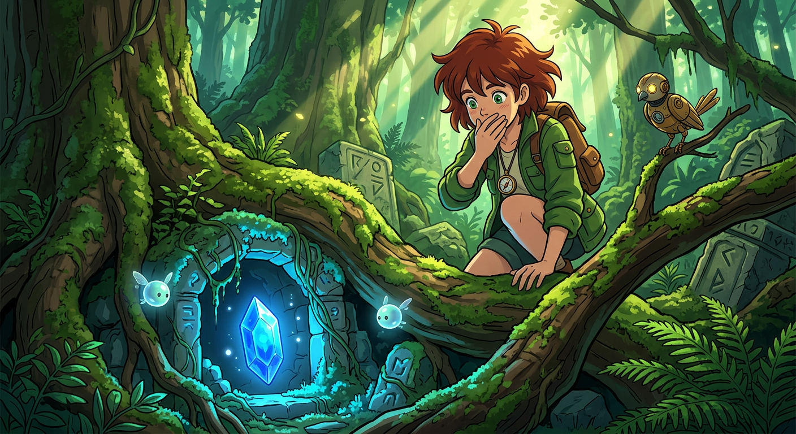
# Chapter Summary
The early morning light had scarcely touched the valley when Mr. Linton issued his careful instructions: young Linton must be conveyed to Wuthering Heights with all haste, and Catherine must remain ignorant of his whereabouts. The deception was necessary, he reasoned, for the child could have no further association with his daughter, and knowledge of his proximity would only breed restlessness and longing in her heart. A simple falsehood would suffice—that his father had sent for him suddenly.
The boy proved most reluctant to be roused at five o'clock, bewildered entirely by the notion that he possessed a father at all. His mother had never spoken of such a person, and the questions tumbled forth with childish persistence: Why had they not lived together? Why had she kept silent? How could he be expected to love a man he had never known? The explanations offered—business in the north, his mother's health requiring southern climes—did little to satisfy his anxious mind. He clung stubbornly to his refusal, demanding that his uncle accompany him, until Mr. Edgar himself was summoned to coax the poor thing from his bed with promises that would prove hollow as autumn husks.
Yet the heather-scented air and bright sunshine worked their gentle magic as they rode, and the boy's spirits lifted enough to inquire about his new home with something approaching interest. When asked to describe Heathcliff, the honest answer came forth: younger than his uncle, yes, but dark-haired and stern, taller and altogether different in manner. The child mused upon this stranger with his black hair and eyes, wondering how he could be expected to love what he could not even imagine.
Upon reaching the farmhouse, young Linton surveyed the low-browed lattices and crooked firs with solemn disapproval, though he wisely held his complaints. Inside, Heathcliff greeted his property with scornful examination, pronouncing the boy a whey-faced disappointment—too delicate, too much his mother's child, with nothing of his father visible in those large, frightened eyes. Joseph and Hareton gawked at the trembling creature who wept against Nelly's shoulder, shrinking from the grim stranger who claimed him.
Yet Heathcliff revealed his calculating purpose plainly enough: the boy was prospective owner of Thrushcross Grange, and through him, Heathcliff would see his descendant lord over the estates of both families, hiring their children to till their fathers' lands for wages. For this triumph alone, he would preserve the whelp, despising him for himself and hating him for the memories he revived. A handsome room stood prepared, a tutor engaged, and Hareton ordered to obey him—all arranged to maintain the superior gentleman above his rough associates.
The parting proved wrenching, with Linton crying out in desperate repetition as Nelly slipped away: "Don't leave me! I'll not stay here!" But the latch fell firm, and the brief guardianship ended with the sound of Minny's hooves carrying her mistress back toward the Grange, leaving the fragile boy to whatever mercies awaited him within those dark walls.
# Chapter XXI Summary
The departure of young Linton Heathcliff brought sad work indeed to the Grange, for little Cathy rose that morning in high spirits, eager to join her cousin, only to be met with such bitter disappointment that her passionate tears and lamentations required Edgar himself to offer comfort. He promised the boy should return soon—if he could arrange it—though such hopes proved hollow. Time, that great healer, eventually dimmed Linton's features in Cathy's memory until she could scarcely have recognised him.
Through occasional encounters with the housekeeper of Wuthering Heights, Nelly gathered intelligence of the young master's condition. He lived as secluded as Catherine herself, perpetually weak and ailing, a tiresome inmate whom Heathcliff could hardly bear to look upon. The boy spent his days wrapped in furred cloaks by the fire, demanding milk and sweets while complaining of draughts and pipe smoke, growing ever more selfish from the utter lack of sympathy surrounding him.
Time wore on pleasantly enough at the Grange until Miss Cathy reached sixteen. On the anniversary of her birth—that melancholy day which also marked her mother's death—Edgar withdrew as always to his solitary vigil, leaving Catherine to her own devices. She persuaded Nelly to accompany her on a ramble across the moors, ostensibly seeking grouse nests, though her steps carried them ever further from home. Before Nelly could catch her, the girl had crossed onto Heathcliff's land, where she stood arrested by the master himself and young Hareton.
Heathcliff, recognising the daughter of his ancient enemies, seized upon the opportunity with calculated warmth. Despite Nelly's protests, he lured Catherine into Wuthering Heights under pretence of rest, revealing his true design with chilling candour: he wished the cousins to fall in love and marry, thereby securing his hold over both properties through legal union rather than leaving matters to the uncertainties of inheritance.
The reunion between Catherine and Linton proved a study in contrasts—she all health and vitality, he languid and frail, yet possessed of a certain grace. Heathcliff watched with bitter calculation, privately lamenting that his own son was such poor material compared to Hareton, whom he had deliberately degraded from natural intelligence into ignorant coarseness. When Catherine discovered Hareton could not read the inscription above the door, she and Linton joined in cruel mockery, revealing an unpleasant streak in both young people that even Nelly found difficult to excuse.
Upon returning home, Catherine confessed everything to her father, who attempted to warn her of Heathcliff's diabolical nature and his role in her mother's suffering. Yet the girl remained half-convinced of her uncle's cordiality and wept that night not for herself but for Linton, who would wait in vain for her return.
Despite all prohibitions, Catherine managed through a milk-boy messenger to conduct a secret correspondence that swelled into a drawer full of love letters—foolish, affected missives that bore occasional traces of a more experienced hand. When Nelly discovered and burned the collection, extracting a tearful promise that such exchanges would cease, the young lady retired to nurse her wounded pride in silence.
Yet even as the ashes settled in the grate, the seeds of connection had been sown, and one sensed that neither burned letters nor parental warnings would long keep these young cousins apart.
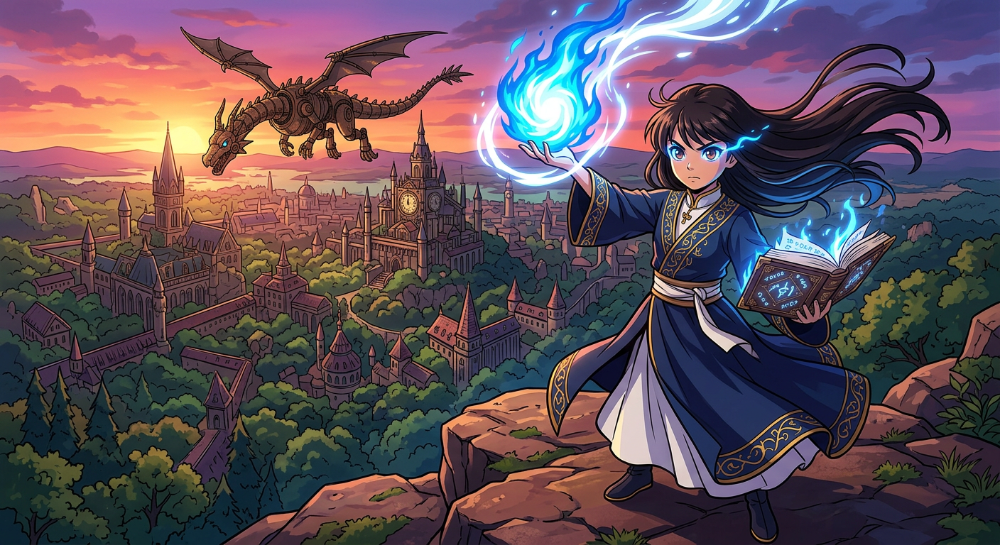
# Chapter XXII Summary
As summer faded into autumn and the harvest lingered late in the fields, a shadow crept over Thrushcross Grange. Mr. Linton, having stayed out too long among the reapers on a chill, damp evening, caught a cold that settled deep in his lungs and imprisoned him indoors for the whole of winter. Poor Cathy, already subdued since the forced abandonment of her secret correspondence with Linton, grew sadder still without her father's companionship on their daily rambles. Nelly did what she could to fill the void, though she knew herself a poor substitute, able to spare only a few hours from her household duties to follow in the girl's footsteps.
On a fresh, watery afternoon in late October or early November—the kind of day when withered leaves rustle underfoot and grey clouds mount rapidly from the west, promising rain—Nelly reluctantly accompanied her young mistress on a walk to the bottom of the park. There was no running or bounding in Cathy now; she moved sadly, her hand rising often to brush tears from her cheek. When Nelly pointed out a lone bluebell trembling beneath twisted tree roots—the last survivor of summer's abundance—hoping to distract her, Cathy refused to pluck it. "It looks melancholy, does it not, Ellen?" she remarked, her words heavy with unspoken grief.
Unable to contain her fears any longer, Cathy confessed the terror haunting her thoughts: that her father would die, that Nelly too would leave her, and she would be left utterly alone in a dreary world. Nelly offered what comfort she could, reminding her that Mr. Linton was still young and might live another twenty years, that worry served no purpose, and that Cathy's duty lay in keeping her father cheerful. But she also delivered a stern warning—that reckless behaviour or a foolish attachment to the son of a man who wished Edgar Linton dead could prove fatal to her father's fragile health. Cathy, earnest and tearful, swore she loved her papa better than herself and would never do anything to vex him.
The moment of tenderness dissolved when fate intervened. Cathy climbed a wall to gather rosehips and, her hat tumbling to the road below, scrambled down to retrieve it—only to find herself trapped outside the locked gate. Before Nelly could fetch the key, the sound of approaching hooves announced the arrival of Heathcliff himself. With calculated cruelty, he informed Cathy that his son Linton was dying for love of her, that her abandonment of their correspondence had driven him into despair, and that only she could save him. Though Nelly denounced these claims as paltry falsehoods, Heathcliff's words found their mark. He spoke of kindness, of dreams, of a boy pining for just one gentle word—and Cathy, despite her loyalty to her father, could not dismiss the image of her cousin suffering alone.
That evening, Cathy lay weeping silently in the library while her father slept unaware in his chamber. No argument Nelly offered could dislodge the doubt Heathcliff had planted. The girl declared she would have no peace until she saw for herself whether Linton truly needed her. And so, against her better judgment, Nelly found herself the very next day riding beside her wilful young mistress toward Wuthering Heights, driven by the faint hope that Linton's own behaviour might dispel the cruel lies his father had so cunningly sown.
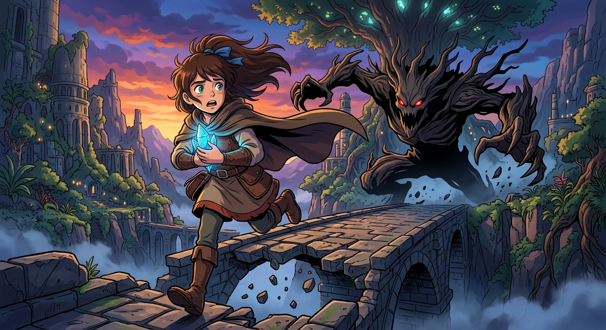
# A Misty Morning at Wuthering Heights
The miserable drizzle of that dreary morning had soaked through to my very bones, leaving me cross and ill-tempered as we made our way to Wuthering Heights—a disposition that would prove prophetic of the troubles to come. Catherine and I entered through the kitchen, where old Joseph sat in his own private paradise before a roaring fire, utterly deaf to any summons that did not suit his pleasure. From the inner room came the petulant voice of young Linton Heathcliff, and upon entering, we found him reclined in a great chair, feverish and wretched, cursing his negligent attendants with all the venom his frail constitution could muster.
The boy was a pitiful sight—coughing, shivering, and demanding attention with the imperious air of one who expects the world to bend to his whims. Catherine flew to him with all the tenderness of her generous heart, but Linton received her affections with complaints rather than gratitude. He chided her for writing letters instead of visiting, lamented the cold hearth and absent servants, and spoke bitterly of Hareton's mockery and his father's cruelty. Yet when Catherine asked if he was glad to see her, a faint smile broke through his misery—her voice, he admitted, was something new and welcome in that cheerless house.
Their conversation turned to matters of love and marriage, as young people's talk so often does. Linton, echoing his father's scheming words, suggested Catherine might one day be his wife; she, in her innocent wisdom, countered that she would rather he were her brother, for brothers and sisters never hate one another as husbands and wives sometimes do. This careless observation sparked a quarrel between the cousins—Catherine citing Heathcliff's treatment of her aunt Isabella, Linton retaliating with poisonous claims about Catherine's own mother loving his father instead of hers.
The dispute escalated until Catherine, beside herself with rage, shoved his chair and sent him into a violent fit of coughing that frightened us all. What followed was a masterful performance of suffering from young Linton—sighing, moaning, and wailing with theatrical precision designed to torture his cousin's conscience. I saw through his manipulations plainly enough, but Catherine, tender-hearted fool that she was, could not bear to leave him in such apparent distress. She soothed and entreated, arranged cushions and sang ballads, until the clock struck twelve and I could finally tear her away—though not before she whispered some secret promise in his ear.
On our journey home, Catherine spoke of Linton as a pretty darling who only needed her care to recover, insisting she was older and wiser and could manage him perfectly well. I told her plainly what I thought—that he was the most ill-tempered, selfish creature I had ever encountered, unlikely to survive another spring. She grew solemn at this, defending his strength with desperate hope, and when I threatened to inform her father of any further visits, she merely said "We'll see" and galloped ahead, leaving me to struggle behind.
The wetness of that morning's excursion laid me up for three weeks with illness, and during my confinement, Catherine proved herself the most devoted nurse imaginable—dividing her days between her father's room and my bedside with tireless affection. Yet the evenings were her own, and though I noticed the fresh colour in her cheeks and the pinkness of her fingers when she came to bid me good-night, I foolishly attributed it to the warmth of the library fire rather than questioning where my young mistress truly spent those quiet hours after tea.
# Chapter XXIV Summary
Three weeks had passed since my illness when I first found strength enough to leave my chamber and sit downstairs of an evening. I asked Catherine to read to me, my eyes being weak, but from the start she showed a strange reluctance—fidgeting, yawning, complaining of fatigue, until finally she fled to her room claiming a headache. Such peculiar behaviour pricked my suspicions, and on the third night, when she again excused herself, I resolved to seek her out. But Catherine was nowhere to be found—not upstairs, not below, not anywhere the servants had seen her.
I waited by her window in the moonlight, the ground dusted white with snow, and there witnessed what I had begun to fear: a groom leading Miss's pony across the grass, and my young mistress herself dismounting and slipping through the casement window like a ghost. When she discovered me watching, she stood petrified, and though I meant to scold her, the recent memory of her tender care during my sickness softened my tongue. Still, I pressed her for the truth, and at last, through tears and entreaties, she confessed everything.
She had been riding to Wuthering Heights every day since I fell ill, bribing the groom Michael with books to keep her secret. There she visited Linton, her sickly cousin, and the tale she told me was one of such mingled happiness and misery as to wring the heart. She spoke of pleasant evenings by the fire with Linton, of their differing visions of heaven—his a drowsy stillness among the heather, hers a wild jubilee of wind and birdsong and sparkling motion. They had quarrelled over trifles, made peace, played at games, and planned summer adventures together.
But darker currents ran beneath these tender scenes. Catherine recounted her cruel mockery of Hareton Earnshaw when he proudly showed her he had learned to spell his own name—a cruelty I could not help but rebuke, for the poor lad had sought only to better himself. And she told of the terrible night when Hareton, stung by her contempt and provoked beyond bearing, had seized Linton and thrown him about so roughly that the frail boy fell into a fit of coughing blood. Catherine had fled in terror, only to be stopped on the road by a remorseful Hareton, whom she struck with her whip and escaped.
The visits continued despite everything—despite Linton's fretful temper, his accusations, his weakness and spite. Catherine forgave him each time, drawn back by pity and by something deeper, until she had grown accustomed to enduring both his cruelty and his suffering with equal patience. She begged me not to tell her father, insisting that silence would preserve the tranquillity of all.
But I could not keep such a secret. That very night I went straight to Mr. Edgar and related the whole history, omitting only her conversations with Linton and any mention of Hareton. My master's distress was plain, though he tried to conceal it. By morning, Catherine learned of my betrayal and learned too that her visits were forbidden forever. She wept and raged, but all her father would grant was permission for Linton to visit the Grange if he chose—a consolation that might have seemed kinder had Mr. Edgar known the true nature of his nephew's temper and the fragile state of his health.
What consequences would follow from this revelation, neither Catherine nor I could then foresee.
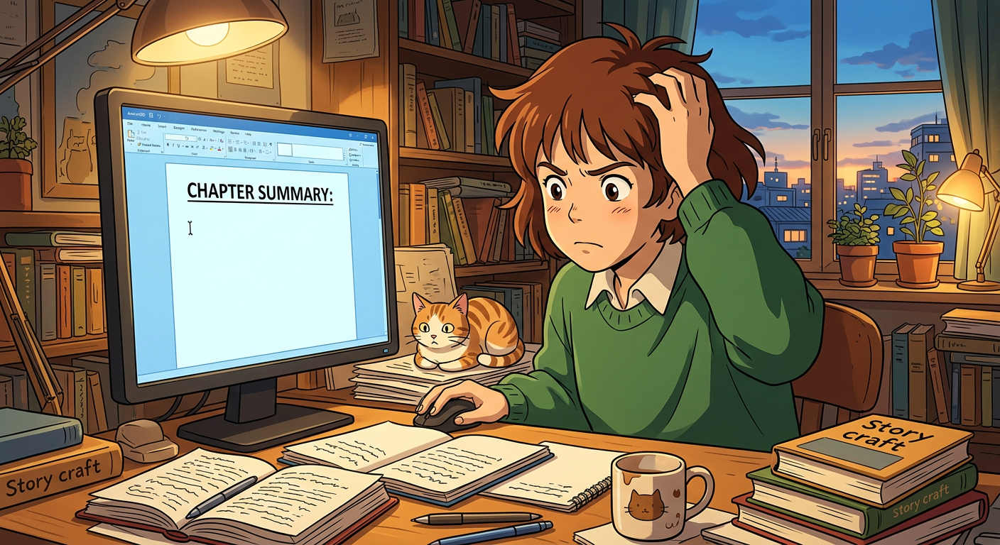
The events Mrs. Dean now relates belong to the previous winter—scarcely a year past—yet she pauses to marvel at the strangeness of sharing such intimate family history with a lodger. She teases Mr. Lockwood about his evident fascination with Catherine Linton, noting how his eyes brighten at the mere mention of the girl, how he has hung her portrait above his fireplace. But Lockwood deflects her insinuations with characteristic self-preservation; he is a creature of the busy world, he insists, and cannot risk his tranquillity by entertaining such temptations. He bids her continue.
Catherine proved obedient to her father's commands, for her love of Edgar remained the ruling force in her heart. Edgar, meanwhile, spoke to her not with anger but with the profound tenderness of a man preparing to leave his most precious treasure exposed to dangers he could not shield her from. His words, he knew, would be all he could bequeath to guide her through the perils ahead. He confided to Ellen his anxious wish that young Linton would write or visit, pressing her for an honest assessment of the boy's character. Ellen answered plainly: Linton was frail, unlikely to reach manhood, yet he bore little resemblance to his father's cruelty. Should Catherine have the misfortune to marry him, she might at least govern him—provided she did not prove foolishly indulgent. But there remained time, she reminded Edgar; years yet before Linton came of age.
Edgar turned to the window and gazed toward Gimmerton Kirk, where the February sun cast dim light upon the scattered gravestones. He confessed that he had long prayed for death's approach, yet now found himself shrinking from it. He had been happy with his little Cathy—she had been a living hope through winter nights and summer days. And yet he had also found peace lying upon her mother's grave, yearning for the time when he might rest beside her. His torment lay not in Linton being Heathcliff's son, nor even in the prospect of losing Catherine to the boy, if only Linton could console her. But should Linton prove merely a feeble instrument of his father's schemes, Edgar could not abandon her to such a fate. Better, he murmured darkly, to lay her in the earth before him than leave her to that.
Ellen offered what comfort she could, urging him to trust Catherine to Providence and promising to stand as the girl's friend and counsellor should the worst befall. Spring advanced, yet Edgar gathered no real strength, though he walked the grounds with his daughter. Catherine, in her innocent hopefulness, mistook his flushed cheeks and bright eyes for signs of recovery. On her seventeenth birthday, rain kept Edgar from his annual pilgrimage to the churchyard, and he deferred it—just a little longer.
Edgar wrote to Linton, expressing his desire to see the boy. Linton's reply, clearly guided by Heathcliff's hand, pleaded eloquently for permission to meet Catherine on the moors, professing innocence and longing. Heathcliff kept sharp watch over every line, ensuring his son's letters harped upon the cruelty of their separation rather than his own miseries. Between Linton's entreaties and Catherine's advocacy, Edgar at last relented: they might ride together once a week, under Ellen's supervision, near the Grange.
Edgar's hope remained that Catherine might one day return to her ancestral home through union with his heir—never suspecting that Linton was failing nearly as fast as himself, nor imagining the tyranny Heathcliff exercised over his dying son to secure his avaricious designs.
As summer approached, the fragile arrangement took hold—though none yet perceived how swiftly time was running out for all concerned.
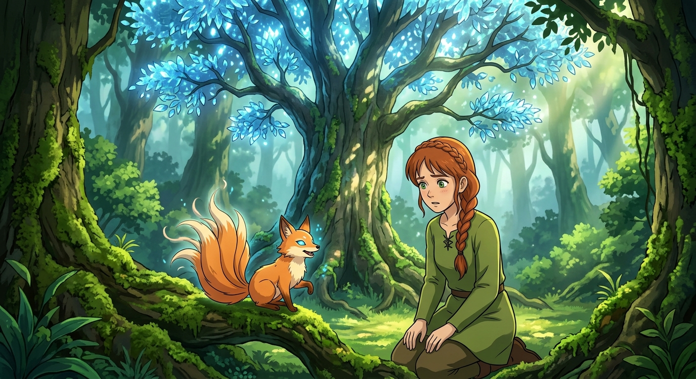
# Chapter Summary
Summer had begun its slow descent toward autumn when Edgar Linton at last relented to the entreaties that had worn upon him, permitting Catherine and Nelly to venture forth on their first ride to meet young Linton Heathcliff. The day hung close and sultry, the sky neither bright nor threatening, merely dappled with haze as they made their way toward the guide-stone at the cross-roads. Yet their intended meeting place proved false—a herd-boy intercepted them with word that Master Linton waited nearer Wuthering Heights, requesting they come further on, in direct violation of Edgar's strict injunction to remain on Grange land.
When they found the boy, scarcely a quarter mile from his father's door, the sight that greeted them was alarming indeed. Linton possessed no horse and lay prostrate upon the heath, rising only when they approached within a few yards. His pallor, his feeble movements, his hollowed eyes—all spoke of deterioration far beyond what Catherine had witnessed in winter. The joyful reunion she had anticipated transformed instantly to anxious inquiry, though Linton insisted, trembling and panting, that he was better, not worse, attributing his wretched appearance to the heat and his rapid growth.
Catherine endeavored to resurrect their old intimacy, speaking of their once-shared dreams of paradise, of future excursions to the Grange Park, but her words fell upon ears that seemed not to comprehend. The change in Linton proved more troubling than mere physical decline. Gone was the pettish child whose ill temper might be coaxed into fondness—in his place sat a figure of listless apathy, self-absorbed in his invalidism, regarding any attempt at cheerfulness as insult rather than comfort. When Catherine, perceiving that her presence brought him punishment rather than pleasure, proposed they depart, Linton roused himself with fearful agitation, casting terrified glances toward the Heights and begging her to stay.
His entreaties carried a desperate quality, accompanied by instructions that revealed the true nature of his anxiety. He implored Catherine to assure her uncle of his tolerable health, to return the following Thursday, and above all, should she encounter Heathcliff, not to appear sad or downcast, not to suggest that their meeting had been anything but pleasant. When Nelly pressed him regarding his father's treatment, whether indulgence had given way to active hatred, Linton offered only silence. His terror manifested again when he started from an exhausted slumber, gasping that he had heard his father's voice, scanning the frowning heights above with hunted eyes.
Catherine departed with a promise to return, her initial disappointment softening during the ride home into something more complex—a mingling of pity, regret, and troubling uncertainty about what manner of existence Linton endured beneath his father's roof. Both she and Nelly found themselves uncertain what to reveal to Edgar, offering only vague accounts while privately resolving that a second visit might illuminate what this first had left shrouded in disquieting shadow.
Yet as they rode away from that heath where Linton lay consumed by dread of his father's approach, neither could have foreseen how thoroughly Heathcliff's designs would entangle them in the visits to come.
# Chapter XXVII Summary
Seven days passed with terrible swiftness, each hour carving into Edgar Linton what months had wrought before. The master lay dying, and though they would have spared young Catherine the knowledge, her sharp spirit refused such comfort—she divined the dreadful truth and let it ripen within her into certainty. She had become a ghost herself, haunting the library and her father's chamber, grudging every moment she was not bent over his pillow. When Thursday came, she had not the heart to mention her promised ride to the moors; Nelly mentioned it for her, and Edgar, hoping to spare his daughter complete solitude after his passing, gladly dismissed her—drawing comfort from the mistaken belief that his nephew Linton shared his own gentle character. Nelly, through pardonable weakness, let the dying man keep his illusions.
The afternoon was golden with August light, every breath from the hills so full of life it seemed capable of reviving even the dying. Catherine's face mirrored the landscape—shadows and sunshine chasing across it—though the shadows lingered longer, and her poor heart reproached itself for even fleeting moments of forgetfulness.
At the Heights, they found Linton watching for them, but his animation was not joy—it was fear. He spoke in gasps, trembling, begging Catherine's forgiveness while confessing himself a coward and traitor. He wept that his life was in her hands, that his father had threatened him, that he dared not speak. Catherine's patience snapped at his enigmatic torment, and she demanded explanation with all the fire of her mother's spirit.
Before truth could emerge, Heathcliff descended upon them. With calculated charm he greeted Nelly, inquired after Edgar's approaching death, then commanded his prostrate son to rise. The boy, paralyzed with terror, could barely stand. Through manipulation and Linton's frantic pleas, Heathcliff maneuvered them all into Wuthering Heights—then locked the door behind them.
What followed was diabolical. When Catherine, blazing with her mother's defiance, snatched at the key, Heathcliff pulled her onto his knee and struck her savagely across the head. Nelly rushed forward but was silenced with a blow. The scoundrel announced his intention: Catherine would marry Linton that very night, before Edgar died, securing Heathcliff's claim to Thrushcross Grange.
Catherine pleaded, wept, even knelt at her tormentor's feet, begging to be allowed home to her dying father. She promised to marry Linton willingly. But Heathcliff savored her misery—he would not sleep for the satisfaction of knowing Edgar suffered, believing his daughter had abandoned him. When servants from the Grange came searching, he turned them away while his prisoners remained ignorant of their presence.
That night, Catherine and Nelly were locked in Zillah's chamber, unable to escape through the narrow windows. Catherine kept vigil at the lattice, watching for morning, while Nelly rocked in her chair, passing harsh judgment on herself for every dereliction of duty that had brought them to this pass.
At seven, Heathcliff came for Catherine alone, leaving Nelly imprisoned. For five nights and four days she remained locked away, seeing only Hareton once each morning—a model jailor, surly and deaf to all appeals for justice or compassion—while somewhere beyond those walls, a forced marriage and a dying father's last hours unfolded without her.
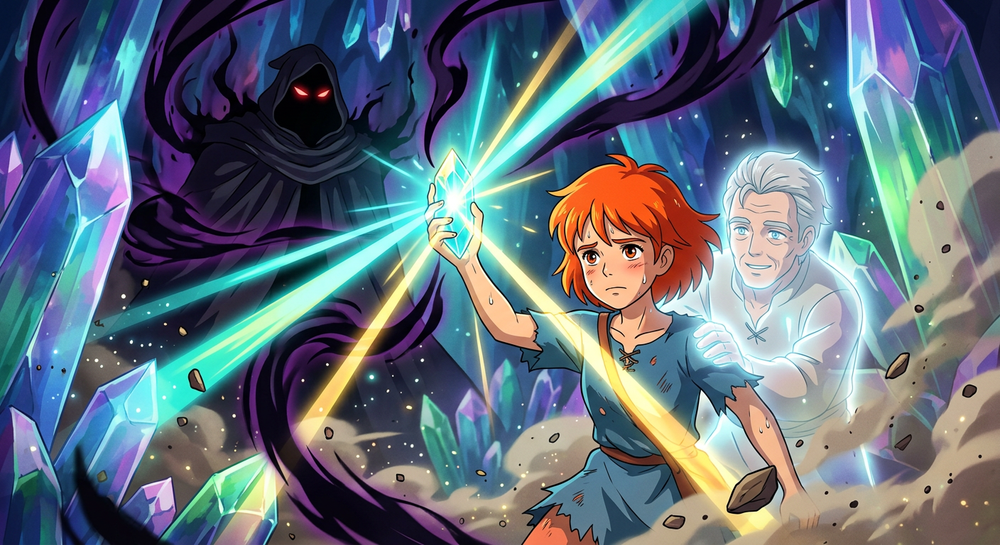
# Chapter Summary
On the fifth afternoon of Nelly Dean's imprisonment at Wuthering Heights, deliverance arrived in an unexpected form—Zillah, the housekeeper, bearing her willow-basket and news from the village. The talk at Gimmerton held that Nelly and young Catherine had been swallowed by Blackhorse marsh, a rumour Heathcliff had done nothing to dispel. When Zillah delivered his message—that Catherine would return to Thrushcross Grange "in time to attend the squire's funeral"—Nelly's blood ran cold, though she quickly learned Edgar Linton yet clung to life, if only by the thinnest thread.
Freed at last, Nelly descended to find the house bathed in sunshine and eerily quiet, save for the wretched figure of Linton Heathcliff sprawled upon the settle, sucking sugar-candy with the indolence of a pampered invalid. When pressed about Catherine's whereabouts, the boy revealed the full measure of his corruption—parroting his father's poisonous lies that Catherine wished him dead for his inheritance, declaring with spiteful satisfaction that everything she possessed now belonged to him. Yet even this heartless creature could not entirely suppress his conscience. Under Nelly's pointed questioning, he confessed the horrors Catherine had endured: Heathcliff striking her so violently that her cheek split against her teeth, the wrenching away of her mother's portrait, which he crushed beneath his boot. The boy spoke of Catherine sitting silent and pale, her face turned to the wall, and admitted he was afraid of her now.
Nelly hastened to Thrushcross Grange, where she found Edgar Linton transformed—an image of sadness and resignation, looking far younger than his thirty-nine years as death approached. The news that Catherine lived and would soon return roused him briefly from his decline. Understanding now the full scope of Heathcliff's scheme to claim both estate and fortune through Linton, Edgar moved swiftly to protect what he could, ordering his will altered to place Catherine's inheritance in trust beyond Heathcliff's grasping hands.
But the lawyer Green had already sold his loyalty to Heathcliff, and the men sent to retrieve Catherine returned empty-handed, reporting she was too ill to move. Nelly resolved to storm the Heights at daybreak—yet providence intervened. In the small hours, a knock came at the door, and there stood Catherine herself, escaped at last. Linton, driven by her anguish and the desperation in her voice, had found courage enough to steal the key. Catherine had crept through her mother's old chamber window, descending by the fir-tree into the moonlit night.
Father and daughter were reunited in that dim sickroom, their meeting too sacred for Nelly to witness closely. Edgar died blissfully, his eyes fixed upon Catherine's face with a radiance that seemed almost holy, murmuring his belief that he went to join his beloved Cathy, and that their daughter would one day follow. He passed so peacefully that none could mark the precise moment his soul departed.
Yet even in death, Heathcliff's reach extended into Thrushcross Grange—Green arrived to impose his master's will upon the household, dismissing servants and attempting to override Edgar's burial wishes. Catherine, now bearing the name Mrs. Linton Heathcliff, was permitted only to remain until her father's hurried funeral concluded, and the shadow of Wuthering Heights waited to reclaim her.
# Summary of Chapter XXIX
The evening following the funeral found Nelly and Catherine seated together in the library at Thrushcross Grange, their minds drifting between mournful reflection and anxious speculation about what dark days lay ahead. They had dared to hope—foolish as it seemed—that Catherine might be permitted to remain at the Grange with Linton brought to her, and Nelly kept on as housekeeper. Such modest dreams shattered the moment a servant rushed in to announce that devil Heathcliff was crossing the courtyard.
There was no time to bar the door against him, nor would it have mattered. He entered as master, for master he now was, striding into the very room where he had first been received as a wretched guest eighteen years prior. The same moon illuminated the same autumn landscape beyond the windows; the portraits of the late Mrs. Linton and her husband gazed down from the walls. Time had scarcely touched Heathcliff—his dark face perhaps more sallow, his frame slightly heavier—but the man remained unchanged in his terrible essence.
He had come to fetch Catherine home to Wuthering Heights, and he would brook no resistance. With cold satisfaction, he described how he had terrorised young Linton into submission without laying a finger on him—merely sitting with the frail boy for two hours until his presence became a haunting spectre that left Linton shrieking through the nights. Catherine must come, Heathcliff declared, for Linton was her concern now, and besides, she owed him service for her bread.
Catherine rose to meet his cruelty with defiance. Though she acknowledged Linton's bitter nature—he was, after all, his father's son—she declared her love stronger than Heathcliff's hatred. With dreary triumph, she pronounced his sentence: he had nobody to love him, nobody who would weep at his death. He was lonely and envious as the devil himself.
When Catherine withdrew to gather her things, Heathcliff's gaze fell upon the portrait of the first Catherine Linton. What followed chilled Nelly to her bones. He confessed that only yesterday he had bribed the sexton to open Catherine's coffin, had gazed upon her face—still recognisably hers after eighteen years—and had arranged for their coffins to be joined when death finally claimed him. For eighteen years her spirit had tormented him, tantalisingly near yet never visible, driving him to the edge of madness. He recounted how, on the very night of her burial, he had dug toward her coffin with desperate hands until he felt her presence—not beneath the earth, but beside him, warm breath displacing the winter wind. Since then, she had haunted him ceaselessly, always almost there, until seeing her face at last had brought him a measure of peace.
Young Catherine returned, ready to depart. Heathcliff forbade her even the comfort of her pony—her own feet would serve for whatever journeys awaited her at the Heights. With lips cold as ice, Catherine kissed Nelly farewell, begging her to visit. But Heathcliff warned Nelly against any such notion; he wanted no prying at his house.
From the window, Nelly watched them descend through the garden, Heathcliff's arm fixed through Catherine's despite her resistance, until the alley of trees swallowed them from sight—carrying the young mistress toward whatever grim fate awaited her in that house of gathering shadows.
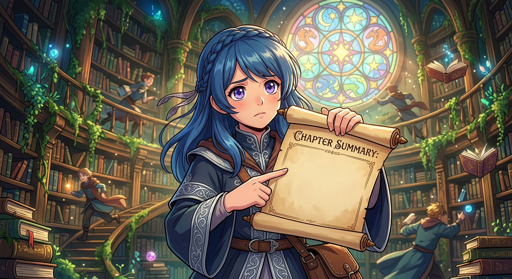
# Summary of Chapter XXX
The moors had yielded their secrets to Nelly Dean through the narrow-minded offices of Zillah, the housekeeper at Wuthering Heights, for Catherine Linton—now Catherine Heathcliff in name, though stripped of all else that name might confer—had become as unreachable as the dead themselves. Joseph, that grim sentinel, had barred the door against Nelly's inquiries, and so it was through Zillah's gossiping tongue that the tale of those dark weeks unfolded.
Upon her arrival at the Heights, young Catherine had flown straight to Linton's chamber, keeping vigil through that first terrible night. When morning came, she emerged trembling, begging that a doctor might be summoned, only to meet Heathcliff's stony cruelty—his son's life, he declared, was not worth a farthing of expense. Thus abandoned, Catherine nursed her dying husband alone, growing pale and hollowed by sleeplessness, sometimes wandering into the kitchen with wild, pleading eyes that Zillah steadfastly ignored. The housekeeper confessed to finding her weeping on the stairs at night, yet fear of the master sealed her lips and her door alike.
The end came as Catherine had foretold. She burst into Zillah's chamber announcing Linton's imminent death, and though the housekeeper delayed, the sharp ringing of the bell soon summoned Heathcliff himself. He examined his son by candlelight, confirmed the boy's passing with terrible calm, then turned to Catherine with a question that rang hollow: "How do you feel?" Her answer carried the bitter weight of her abandonment—she felt free, yet she felt like death itself, having struggled alone against it for so long.
In the aftermath, Heathcliff revealed the full measure of his scheming. Linton's will, extracted through threats or coaxing during Catherine's absence at her father's deathbed, bequeathed all moveable property to Heathcliff. The lands he claimed through legal machinations tied to his late wife's rights. Catherine was left destitute, friendless, a prisoner in all but name.
A fortnight she remained upstairs, cold and proud even to those who might have offered kindness. When at last the bitter weather drove her down, she descended in mourning black, her golden curls scraped back severely, a Quaker's plainness about her grief. Yet pride burned in her still. When Hareton—cleaned and hopeful, awkward in his admiration—offered her books and fumbled toward tenderness, even daring to touch one silken curl, she recoiled as though struck, her contempt lashing out at him and all the household. She would not forgive their neglect, would not soften, growing only more venomous with each wound.
Nelly, hearing this account, dreamed of rescuing her young lady, of establishing them together in some modest cottage. But Heathcliff would permit no such escape, and so Catherine remained trapped at the Heights, bitter and isolated, her spirit hardening against the cold indifference surrounding her.
Thus concluded Nelly Dean's long narrative, and Lockwood, though still recovering from his illness, resolved to quit this inhospitable country—to ride once more to Wuthering Heights, settle his affairs with his landlord, and flee to London before another brutal winter could claim him.
# Summary of Chapter XXXI
On a bright, frosty morning, Lockwood makes his way to Wuthering Heights, carrying a note from Ellen Dean to her young mistress. The gate stands chained as before, and Hareton Earnshaw—handsome despite his apparent efforts to diminish his own advantages—admits him with the sullen vigilance of a watchdog rather than the welcome of a host.
Inside, Catherine busies herself with vegetables, her spirit noticeably dimmed since Lockwood's earlier encounter with her. She offers no greeting, no acknowledgment of common courtesy, and when Lockwood attempts to slip Ellen's letter to her unnoticed, she exposes his gesture aloud. Hareton seizes the letter, insisting Heathcliff must see it first, but something softens in him—he cannot maintain his cruelty and flings the paper to the floor beside her. Catherine reads it eagerly, her questions about her former home at the Grange revealing the depth of her longing. She gazes toward the distant hills and murmurs of riding her pony Minny, of climbing freely, confessing herself tired and *stalled*—a creature caged.
When Lockwood presses her to send word back to Ellen, Catherine explains she has nothing with which to write. Heathcliff has destroyed her books, leaving her without even a page to tear. This revelation sparks a bitter exchange with Hareton, for Catherine has discovered his secret hoard of volumes—Latin, Greek, poetry, old tales—hidden in his room. She mocks his stumbling attempts at reading, his laboured pronunciation, the way he curses over the dictionary. Her contempt cuts deep, and though Lockwood attempts to defend the young man's desire for self-improvement, Catherine persists in her cruelty, insisting that Hareton debases her treasured verses with his ignorance.
The wound proves too much. In a moment of anguished fury, Hareton gathers the books and hurls them into the fire, destroying the very things that represented his hope of becoming worthy of her. Catherine taunts him still, nursing her bruised lip where his hand had checked her tongue. When Heathcliff arrives, Hareton flees to suffer his grief alone, and Heathcliff, watching him go, murmurs something strange—that he sees not Hareton's father in the young man's face, but *her*, every day more clearly. The sight of it pains him almost beyond bearing.
Over a cheerless dinner, with Heathcliff grim and Hareton mute, Lockwood announces his intention to quit Thrushcross Grange and return to London. The master of the Heights accepts this news with cold indifference, caring only that debts be settled. Catherine is banished to the kitchen, and Lockwood departs without a final glimpse of her, riding away with melancholy reflections on the dreariness of that house—and idle fancies of what romantic rescue might have been, had he and the young widow struck up an attachment and escaped together to the stirring world beyond those moors.
Yet such fancies belong to fairy tales, and Wuthering Heights permits no easy escapes—only the slow burning of hope and the bitter education of hearts too proud or too wounded to yield.
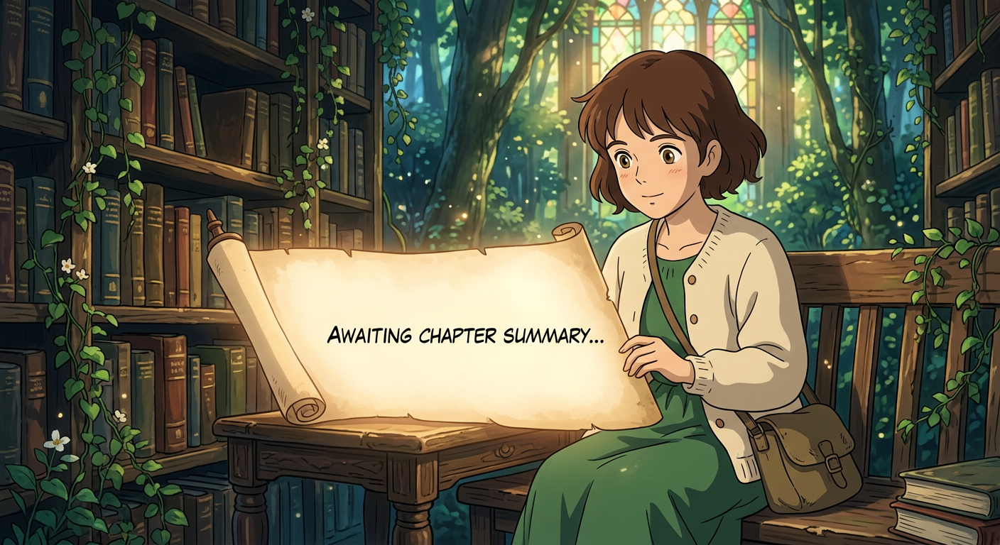
# Chapter XXXII Summary
It is September of 1802 when Mr. Lockwood finds himself unexpectedly within striking distance of that wild northern country he had so readily fled months before. A chance remark from an ostler about a cart of oats from Gimmerton stirs something in him—a sudden, impulsive desire to revisit Thrushcross Grange, that lonely tenant's dwelling he had abandoned with such haste. The journey proves arduous, the road rough and wearying to his beasts, but by late afternoon he descends into the valley, where the grey church appears greyer still, the churchyard lonelier, and a solitary moor-sheep crops the turf upon the graves. The September warmth renders the landscape almost divine, those bluff swells of heath and secluded glens transformed by summer's lingering grace into something approaching paradise.
At the Grange, Lockwood discovers an unfamiliar housekeeper—an old woman smoking a meditative pipe—who informs him that Nelly Dean has gone to the Heights. The house lies unprepared for its master's sudden arrival, but Lockwood dismisses the woman's flustered apologies and sets out walking toward Wuthering Heights as twilight descends, the amber remnants of day fading behind him while a splendid moon rises ahead to illuminate every pebble and blade of grass upon his path.
What greets him there astonishes him utterly. The gate yields without climbing or knocking. The fragrance of stocks and wallflowers perfumes the air. And through the open lattices, Lockwood beholds a scene of domestic tenderness that fills him with mingled curiosity and envy: a young man seated at a table, reading aloud from a book, while a beautiful young woman with light, shining ringlets bends over his shoulder, correcting his mistakes and rewarding his progress with kisses. It is Hareton Earnshaw and Catherine—and their easy intimacy, their playful affection, strikes Lockwood with sharp regret for chances he himself had thrown away.
He retreats to the kitchen, where Nelly Dean sits sewing and singing, unmoved by Joseph's outraged complaints about her ungodly tunes. Upon recognising Lockwood, she delivers the stunning news: Heathcliff is dead, three months gone. And so, with ale fetched and Joseph's grumbling ignored, Nelly undertakes to tell the remarkable tale of what has transpired since Lockwood's departure.
She recounts how Catherine, confined to the garden and increasingly restless, had begun tormenting Hareton in the kitchen—mocking his silence, his ignorance, his dog-like existence. Yet beneath her cruelty lay something more complex, a conscience that reproved her for having once frightened him away from self-improvement. Gradually, cunningly, she attempted to remedy the injury, leaving books about, reading aloud in his presence, though he remained obstinate as a mule. It was not until Easter Monday, when an accident had confined Hareton to the fireside, that Catherine finally broke through his sullen defences. She confessed her desire for friendship, persisted through his gruff rejections, and when he refused even to shake her hand, she kissed his cheek—a small, tender gesture that dissolved his resistance entirely. A book wrapped in white paper, addressed to "Mr. Hareton Earnshaw," sealed their reconciliation, and soon those two radiant faces bent together over its pages, sworn allies at last.
Nelly concludes with evident satisfaction: the crown of all her wishes shall be the union of these two young people, and she envies no one the happiness their wedding day will bring.
Yet the tale remains incomplete—for Heathcliff's strange and solitary end has yet to be told, and the shadows of that haunted house have not yet released their final secrets.
# Summary of Chapter XXXIII
The morning following that fateful Monday found Earnshaw confined to the house by his ailments, and with him so near at hand, I soon discovered the impossibility of keeping my young mistress within proper bounds. Before I could descend to my duties, Catherine had already stolen out to the garden where she discovered her cousin at some light labour, and by the time I sought them for breakfast, the pair had wrought considerable havoc upon Joseph's beloved currant and gooseberry bushes—all in service of Catherine's fancy for a flower bed transplanted from the Grange.
The devastation struck me with terror, for those black-currant trees were nothing less than sacred to old Joseph, and I foresaw the tempest that must follow. Young Hareton, puzzled but steadfast, offered at once to take the blame upon himself—a gesture that spoke volumes of his shifting loyalties.
At table, where I performed my customary duties as mistress of the tea and carving knife, Catherine abandoned all discretion. Despite my whispered warnings about Heathcliff's watchful eye, she sidled close to Hareton and commenced her teasing, tucking primroses into his porridge until the poor young man nearly burst with suppressed laughter. The master's attention snapped toward them like a striking snake, and his fury at Catherine's defiant stare sent ice through my veins.
Yet this proved merely prelude to the greater storm. Joseph appeared at the door, trembling with righteous indignation over his desecrated garden, his dialect thick with grief and rage as he demanded his wages and threatened to depart forever rather than witness such destruction. When Heathcliff grasped the situation and turned his wrath upon Catherine, she met him with remarkable boldness—claiming the land and money he had stolen, invoking Hareton's name as her protector, pushing the master beyond all endurance.
What followed was dreadful to witness. Heathcliff seized her by the hair, his black eyes blazing with murderous intent, and only some mysterious force—some vision or memory that passed across his features—stayed his hand from violence. He released her with a warning that chilled my blood, threatening to make Hareton an outcast should he continue consorting with Catherine.
Yet something remarkable emerged from this confrontation. When Catherine later attempted to poison Hareton against Heathcliff with revelations of past wrongs, the young man refused to hear it. He remained bound to his tormentor by chains of habit stronger than reason could sever, and Catherine, showing the good heart within her, abandoned her campaign of hatred.
In the days that followed, I watched with profound contentment as the two young people established themselves as pupil and teacher, their bonny heads bent together by firelight, their faces animated with the eager interest of children discovering the world anew. When Heathcliff returned and found them thus, something within him seemed to break. He confessed to me a strange and terrible truth—that his will for vengeance had utterly dissolved, that the sight of Hareton conjured only the ghost of his lost Catherine, that every surface and shadow in the world served merely to remind him of what he had lost.
A change was approaching, he said, and he stood already within its shadow—though whether that change would prove his salvation or his final destruction, neither he nor I could yet divine.
# Chapter XXXIV Summary
In the days following the strange evening, Heathcliff withdrew from the household, shunning meals yet refusing to formally banish Hareton and Cathy from his presence. He ate perhaps once in a day, if that, and took to wandering the moors through the night hours. It was April, and the world had turned soft and green, the dwarf apple trees blooming against the southern wall, when Cathy came running back from the gate with a perplexed countenance, reporting that Heathcliff had spoken to her—and that he looked *different*. Not angry, not brooding, but bright. Almost cheerful. Wild and glad.
Nelly found him at the open door, pale and trembling, yet with a strange joyful glitter in his eyes that transformed his entire aspect. When she pressed him about his night-walking, he answered cryptically: *Last night I was on the threshold of hell. To-day, I am within sight of my heaven. I have my eyes on it: hardly three feet to sever me!*
What followed was a slow, terrible unwinding. Heathcliff ceased to eat, though not by any deliberate design—his body simply refused sustenance, his attention captured by something invisible, some presence that communicated both exquisite pleasure and anguish. His eyes pursued it with unwearied diligence, even as his fingers clenched before they could reach the bread Nelly pressed upon him. He paced through the nights, muttering Catherine's name in tones wrung from the very depth of his soul, speaking as one would speak to a person present.
When Nelly attempted to counsel him toward repentance and Christian preparation for death, he dismissed her concern without anger. *I'm too happy,* he told her, *and yet I'm not happy enough. My soul's bliss kills my body, but does not satisfy itself.* He wanted only to be buried beside Catherine, in the evening, with no minister and nothing said over him—for he had nearly attained his heaven, and cared nothing for any other.
For four days he swallowed nothing. On the final evening, rain poured down through the night, and when Nelly approached his chamber come morning, she found the window swinging open, the rain driving straight in. She obtained entrance with another key and discovered him laid on his back, perfectly still, his face washed with rain, his eyes open and fierce—and fixed in a frightful, exultant gaze that seemed to sneer at death itself.
They buried him as he wished, to the scandal of the neighbourhood—only Earnshaw, Nelly, the sexton, and six pallbearers in attendance. Hareton, the most wronged of all, wept in bitter earnest and pressed kisses to that savage face every one else shrank from. The country folk swore afterward that Heathcliff walked still, that he and a woman had been seen together near the church, on the moor, even at the Heights. Nelly herself encountered a little shepherd boy weeping on a dark evening, too frightened to pass the spectres he claimed to see beneath the rocks.
Yet when Lockwood visited the kirkyard on his walk home, lingering beneath that benign sky among the three headstones—Catherine's grey and half-buried in heath, Edgar's harmonized by creeping moss, Heathcliff's still bare—he watched the moths flutter through the harebells, listened to the soft wind breathing through the grass, and wondered how anyone could imagine unquiet slumbers for the sleepers in that quiet earth.
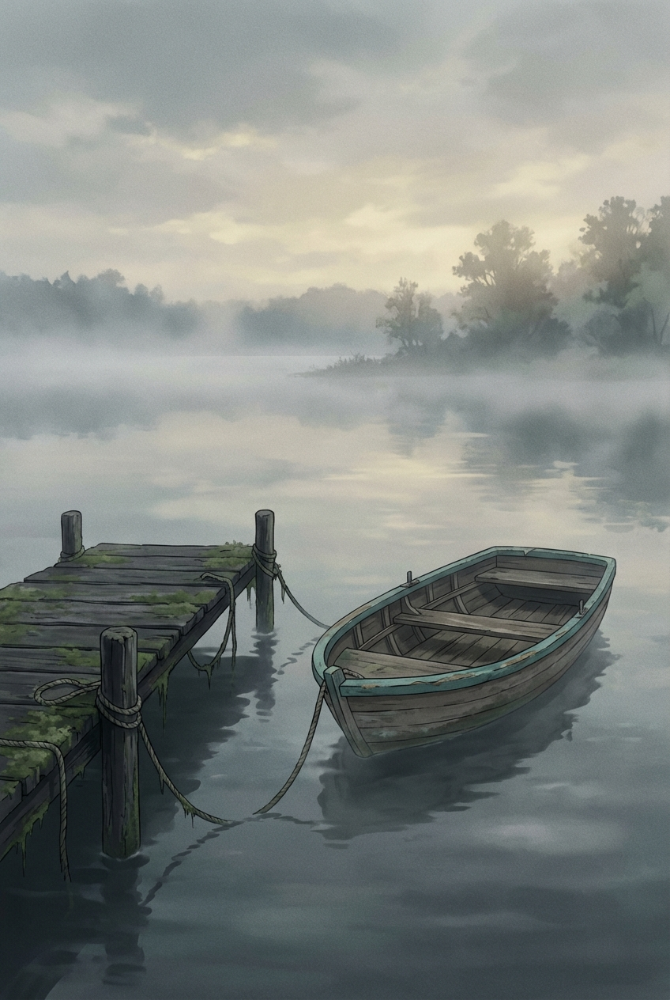